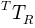

API¶
process¶
- class Py3DFreeHandUS.process.Process[source]¶
Class for performing: US probe calibration; calibration quality assessment; voxel-array reconstruction
Methods
- adjustUSTimeVector()[source]¶
Adjust the original time vector of US images. The time delay set by setDevicesTimeDelay() will be subtracted from the original time vector extracted from US data.
Note
This method must be called before any method using optoelectronic data, such as calculatePoseForUSProbe().
- alignUSImages()[source]¶
Align US images in the global reference frame. This task can take some time, and computation time is proportional to the total number of US images to align.
- calculateConvPose(convR)[source]¶
Calculate roto-translation matrix from global reference frame to convenient reference frame. Voxel-array dimensions are calculated in this new refence frame. This rotation is important whenever the US scans sihouette is remarkably oblique to some axis of the global reference frame. In this case, the voxel-array dimensions (calculated by the smallest parallelepipedon wrapping all the realigned scans), calculated in the global refrence frame, would not be optimal, i.e. larger than necessary.

Parameters: convR : mixed
Roto-translation matrix. If str, it specifies the method for automatically calculate the matrix. If ‘auto_PCA’, PCA is performed on all US image corners. The x, y and z of the new convenient reference frame are represented by the eigenvectors out of the PCA. If ‘first_last_frames_centroid’, the convenent reference frame is expressed as:
- x from first image centroid to last image centroid
- z orthogonal to x and the axis and the vector joining the top-left corner to the top-right corner of the first image
- y orthogonal to z and x
If np.ndarray, it must be manually specified as a 4 x 4 affine matrix.
- calculateDevicesTimeDelay(method='vert_motion_sync', **kwargs)[source]¶
Estimate the delay between the US device and the optoelectronic device.
Parameters: method: str
Method used for the estimation. If ‘vert_motion_sync’, the user should have performed a vertical motion of the US probe so that the vertical coordinate of the markers cluster reference frame resambles a sine wave. It is suggested to scan the bottom of a water tank and make sure that the bottom of the line is kept more or less horizontal. The center of that line should have been detected in advance. A cross-correlation, between the normalized y coordinate (in US image reference frame) of the line center and the the normalized vertical coordinate (in global reference frame) of the origin of markers cluster reference frame, will be performed. Normalization consists of demeaning and dividing by the maximum of the rectified signal. From the cross-correlation signal, the maximum value within the time range (-1,+1), in seconds, is found. The time instant in which that maximum occurs is the time delay estimation. If positive, the US device is early with respect to the optolectronic device.
vertCoordIdx : int, optional
3D marker coordinate index representing the vertical coordinate with respect to global reference frame (0 <= vertCoordIdx<= 2). Considered if method='vert_motion_sync'.
showGraphs : bool, optional
If True, normalized signals to be correled and correlation signal will be displayed. Execution will stop until the graphs windows is closed. Considered if method='vert_motion_sync'.
- calculatePoseForUSImages()[source]¶
Calculate the pose of the US images with respect to the global reference frame.
Note
In [Ref2], this is the product
 .
.
- calculatePoseForUSProbe(mkrList=['M1', 'M2', 'M3', 'M4'], USProbePoseFun='default', USProbePoseFunArgs=None, globPoseFun=None, globPoseFunArgs=None, kineFilesReadOpts={}, showMarkers=False)[source]¶
Calculate the attitude (or pose) of the marker-based US probe reference frame with respect to the global reference frame.
Note
In [Ref2], this is named .
After extracting markers data from the kinematics files set with method setKineFiles(), this data will be concatenated and resampled using USTimeVector, if this one is available. Otherwise, kinematics data will be resampled based on optoelectronic system frequency and US system frequency. Only after kinematics and US data have a common time line, US probe attitude will be calculated.
Parameters: mkrList : list
List of marker names to be extracted from kinematics files. These will be used for creating the probe reference frame, and the global reference frame, if requested.
USProbePoseFun : mixed
Function defining the US probe reference frame. If function, it takes two input parameters. The first one is mkrList, while the second one being a dictionary where the keys are marker names defined in mkrList, and value are N x 3 Numpy arrays of 3D coordinates (N is the number of time frames). The function must return a 2-elements list; the first one is a Numpy N x 3 x 3 rotation matrix from probe reference frame to laboratory reference frame; the second one is a N x 3 Numpy array representing 3D coordinates of US probe reference frame origin in laboratory reference frame. If string, it must be 'default'. In this case, the reference frame is defined as in the function kine.markersClusterFun().
USProbePoseFunArgs : mixed
Additional parameters passed to USProbePoseFun.
globPoseFunArgs : mixed
Additional parameters passed to globPoseFunArgs.
globPoseFun : mixed
Function defining the global reference frame. This function takes the same input arguments as the function USProbePoseFun. It must return a 2-elements list; the first one is a Numpy N x 3 x 3 rotation matrix from global reference frame to laboratory reference frame; the second one is a N x 3 Numpy array representing 3D coordinates of the global reference frame origin in laboratory reference frame.
kineFilesReadOpts : dict
Options for kinematics files reading. See parameter opts for kine.readC3D() function.
showMarkers : bool
If True, show the marker data after resampling to US time line.
- calculateProbeCalibrationAccuracy(acc='DA', L=100.0, P=array([], shape=(0L, 3L), dtype=float64))[source]¶
Estimate calibration accuracy.
Parameters: acc : str
Accuracy type to estimate. If ‘DA’, Distance Accuracy is estimated (see [Ref2]). It needs 2 single-point features to be extracted for some US images of a calibration quality assessment acquisition. These 2 points (each for different US images) are reconstructed in global reference frame and the distance is calculated. This process can be repeated for other couples of US images. For instance, if one point is indicated for frames 1, 4, 10, 15, 25, 40, then 3 distances are calculated (1-4, 10-15, 25-40). DA is the mean of the difference between these distances and the gold-standard measured real distance L. If ‘RA’, Reconstruction Accuracy is estimated (see [Ref2]). It needs 1 single-point feature to be extracted for some US images of a calibration quality assessment acquisition. These points (each for different US images) are reconstructed in global reference frame. RA is the mean of the norm of the difference between these points and the gold-standard points P.
L : float
Gold-standard distance (in mm) for DA estimation.
P : np.ndarray
Gold-standard 3D position (in mm) for RA estimation. It must be a N x 3 array containing 3D positions for points, where the time line is the same as the US data. Only the points whose time frames correspond to the single-point features.
- calculateProbeCalibrationPrecision(prec='RP')[source]¶
Estimate calibration precision.
Parameters: prec : str
Precision type to estimate. If ‘RP’, Reconstruction Precision is estimated (see [Ref1]). It needs single-point feature to be extracted for some US images of a calibration quality assessment acquisition. The points are the reconstructed in 3D space, creating a cloud of points. RP is the mean of the distances between each 3D point and the 3D average point.
- calculateVoxelArrayDimensions()[source]¶
Calculate dimensions for voxel array. The convenient reference frame (see calculateConvPose()) is translated to a voxel array reference frame, optimally containing the US images is the first quadrant.
- calibrateProbe(init, xtol=None, ftol=None, method='eq_based', method_args={'phantom': 'single_wall', 'regularize_J': True}, fixed=[], correctResults=False)[source]¶
Calculate the attitude (or pose) of the US images with respect to the probe reference frame.
Note
In [Ref2], this is named
 .
.Parameters: init : dict
Dictionary containing initial values for the calibration algorithm (see [Ref2], Table 1). Keys must belong to this list:
- sx, sy: number of mm for each pixel in US image, for horizontal and vertical axis (in mm/pixel)
- x1, y1, z1: coordinates (in mm) of vector pointing from US probe reference frame origin to the US image reference frame origin.
- gamma1, beta1, alpha1: rotation angles (in rad) representing consecutive rotations around the US image reference frame axis (X, Y and Z). This rotations would get it oriented as the US probe reference frame (see here for more details). Use opposite sign with respect to the right-hand rule
- x2, y2, z2: coordinates (in mm) of vector pointing from global reference frame origin to the calibration phantom reference frame origin.
- gamma2, beta2, alpha2: same meaning as gamma1, beta1, alpha1, but now the rotations are from global reference frame to probe reference frame.
If method='eq_based', only the following variables have to be present: ‘sx’, ‘sy’, ‘x1’, ‘y1’, ‘z1’, ‘alpha1’, ‘beta1’, ‘gamma1’, ‘x2’, ‘y2’, ‘z2’, ‘alpha2’, ‘beta2’, ‘gamma2’. If method='maximize_NCCint' or 'maximize_NCC', only the following variables have to be present: ‘x1’, ‘y1’, ‘z1’, ‘alpha1’, ‘beta1’, ‘gamma1’.
xtol : float
Relative error desired in the approximate solution (see argument options['xtol'] or tol in scipy.optimize.root()).
ftol : float
Relative error desired in the sum of squares (see argument options['ftol'] in scipy.optimize.root()).
method : str
Method used to estimate calibration parameters. If ‘eq_based’, a system of equations (representing contraints) will be solved (see [Ref2]). If ‘maximize_NCCint’, the algorithm used is a modification of the one described in [Ref3]. It aims at maximizing the average Normalized Cross-Correlation of the intersection of pair of US images. If ‘maximize_NCC’ or ‘maximize_NCCfast’, the algorithm used is described in [Ref3].
method_args : dict
Further arguments for method used. If method='eq_based', it must contain the following keys:
- ‘phantom’: calibration phantom type (see [Ref2]). If ‘single_wall’, the calibration equations system is solved by using formula 8 in [Ref2]. Variables x2, y2, alpha2 will be forced to 0.
If method='maximize_NCCint', it must contain the following keys:
- ‘frames’: If ‘all_combos_in’, then all the frames combinations in a interval will be used. If list, each element must be a list of 2 elements, representing a frames combination for NCC calculation.
- ‘frames_interval’: see ‘frames’.
NCC values, each one related to a couple of frames, will be averaged.
If method='maximize_NCC' or method='maximize_NCCfast', it must contain the following keys:
- ‘sweep_frames’: 2-elem list where the first element is a list of original images sweep frames and the second element is a 2-elem list defining start and end frame of the reconstruction sweep.
- ‘imag_comp_save_path’: if not empty, it will be used to save each the couple original image - reconstruction for each iteration. Each file name is in the format it<itn>_im<ofn>.jpeg, where <itn> is the iteration number (for Nelder-Mead method), <ofn> is the original image frame number.
- ‘max_expr’: expression to maximize. If ‘avg_NCC’, the NCCs calculated for each wanted pair original frame vs reconstruction template will be averaged. If ‘weighted_avg_NCC’, the NCCs calculated for each wanted pair original frame vs reconstruction template will be averaged using as weigths the percentage of reconstructed template. This percentage, in the bottom-left picture in the figures saved in ‘imag_comp_save_path’, corresponds to the ratio between the area occupied by the straight lines and the image size.
Common parameters for all NCC-based methods:
- ‘th_z’: threshold value (in mm) under which points on a reconstruction sweep can be considered belonging to an original image plane.
NCC values, each one related to one frame from the first sweep and the reconstruction sweep, will be averaged.
fixed : list
List of variable name for which the value is exactly known. These variables become constant in the calibration equations. For the list of allowed names, see argument init.
correctResults : bool
Correct for mirror solutions. According to the Appendix of [Ref2], calculated variables could bring to ‘mirror solutions’. This flag will bring them to a standard form.
- evalCalibMatrix(x)[source]¶
(static) Evaluate calibration matrix with parameters values.
Parameters: x : dict
See param init for function calibrateProbe(). Only the following keys will be used: alpha1, beta1, gamma1, x1, y1, z1.
Returns: prRim : np.ndarray
3 x 3 rotation matrix from US image reference frame to probe reference frame.
Tim : np.ndarray
3-elem vector (in mm), expressed in probe reference frame, from probe reference frame origin to US image reference frame origin.
- exportVoxelArraySilhouetteToVTI(outFile)[source]¶
Export US scan silhouette voxel-array to VTI file.
Parameters: outFile : str
Full file path for the VTI file to be saved.
- exportVoxelArrayToVTI(outFile)[source]¶
Export grey-values voxel-array to VTI file.
VTI is a VTK file format (see here).
Parameters: outFile : str
Full file path for the VTI file to be saved.
- extractFeatureFromUSImages(feature='2_points_on_line', segmentation='manual', segParams={}, showViewer=True, featuresFile=None)[source]¶
Extract features (points, lines, ...) from US images.
The used file will be the one indicated in method setUSFiles().
Parameters: feature : str
target feature type. If ‘2_points_on_line’, the features under consideration are 2 points on the longest edge line in the image. If ‘2_points’, the features under consideration are 2 manually defined points. If ‘1_point’, the feature under consideration is 1 manually defined point. If ‘mask’, the feature under consideration is a suset of pixels of the image.
segmentation : str
Segmentation method. If ‘manual’, an interactive window will be popped up and the user will be able to select manually the features image per image. If ‘auto_hough’ (only for feature='2_points_on_line'), the longest line will be automatically detected by the Hough transform and 2 points will be place on that line according to segParams.
segParams : dict
Parameters for features extraction. If segmentation='auto_hough':
- ‘par_seg’: see parSeg in SegmentPointsHoughUI.__init__().
- ‘data_constr’: see dataConstr in SegmentPointsHoughUI.__init__().
- ‘save_data_path’: see saveDataPath in SegmentPointsHoughUI.__init__().
If segmentation='mask', see maskParams in MaskImageUI.__init__().
showViewer : bool
If True, it pops up a viewer to show or edit the features.
featuresFile : mixed
Features file path. If None, it will be ignored. Othwerwise, it must indicate the full path of a previously saved. This contains features data.
- getAdjustedUSTimeVector()[source]¶
Get adjusted US time vector (see adjustUSTimeVector()).
Returns: list
Adjusted US time vector.
- getDevicesTimeDelay()[source]¶
Get estimated delay between the US device and the optoelectronic device (See method calculateDevicesTimeDelay()).
Returns: float
Time delay (in seconds).
- getImageCornersAs3DPoints()[source]¶
Create virtual 3D points for US images corners with respect to the global reference frame.
Returns: dict
Dictionary where keys are 4 marker names and values are np.ndarray N x 3 matrices, representing point coordinates, for N time frames. The following are the points created:
- im_TR: top-right corner
- im_BR: bottom-right corner
- im_TL: top-left corner
- im_BL: bottom-left corner
- getPoseForUSImages()[source]¶
Get the pose of the US images with respect to the global reference frame.
Returns: np.ndarray
N x 4 x 4 pose, for N time frames.
- getProbeCalibrationAccuracy(acc='DA')[source]¶
Get estimated calibration accuracy data.
Parameters: acc : str
See method calculateProbeCalibrationAccuracy().
Returns: listDA : np.ndarray
Array containing as many values as the keys into points. If 2 points where indicated in the corresponding US image, than the value corresponds to the difference between the points distance and L, np.nan otherwise.
DA : float
Mean of listDA ignoring nans.
- getProbeCalibrationData()[source]¶
Get calibration results.
Returns: prRim : np.ndarray
3 x 3 rotation matrix from US image reference frame to probe reference frame.
Tim : np.ndarray
3-elem vector (in mm), expressed in probe reference frame, from probe reference frame origin to US image reference frame origin.
sx, sy : float
See method calibrateProbe().
calib : dict
Dictionary with the following fields:
- root_sol (Result) – contains output from scipy.optimize.root().
- root_vars (list) – contains variables names (see argument init for argument calibrateProbe()).
- RMS (float) – RMS of the equations residuals (only for method='eq_based' in calibrateProbe())
- kond (int) – Condition number calculated as the ratio between max and min eigenvalues from the SVD decomposition of Jacobian matrix calculated in the solution point (only for method='eq_based' in calibrateProbe()).
- cov_x (np.ndarray) – covariance matrix differing from calib[‘root_sol’].cov_x for a multiplying factor being sum of squared residuals divided by degrees of freedom (only for method='eq_based' in calibrateProbe()).
- getProbeCalibrationPrecision(prec='RP')[source]¶
Get estimated calibration precision data.
Parameters: prec : str
See method calculateProbeCalibrationPrecision().
Returns: float
Precision estimation.
- getVoxelArrayPose()[source]¶
Return roto-translation matrix from voxel array reference frame to global reference frame.
Returns: np.ndarray
4 x 4 rototranslation matrix.
- getVoxelPhysicalSize()[source]¶
Get physical size for a single voxel.
Returns: list
3-elem list with voxel dimensions (in mm) for each direction.
- initVoxelArray()[source]¶
Initialize voxel array. It instantiate data for the voxel array grey values.
- setDataSourceProperties(**kwargs)[source]¶
Set data source properties (for US and/or optoelectronic system).
Parameters: kineFreq : int, optional
Optoelectronic system frequency (in Hz).
USFreq : int, optional
US system frequency (in Hz).
w : int, optional
US image width (in pixels).
h : int, optional
US image height (in pixels).
USTimeVector : list, optional
List of time instants (in s) in which US frame were recorded. If multiple US files are provided in setUSFiles(), the length of this parameter must be equal to the sum of the frame numbers for each US file.
fromUSFiles : list, optional
List DICOM file paths from which to extract US data properties. If specified, w, h, USTimeVector, USFreq provided as input will be ignored and will be parsed from these files
pixel2mmX, pixel2mmY : float; optional
Number of mm for each pixel in US image, for horizontal and vertical axis (in mm/pixel).
- setDevicesTimeDelay(timeDelay)[source]¶
Set delay between the US device and the optoelectronic device.
Parameters: timeDelay : float
Time delay (in seconds) between the two devices. If positive, US device is early.
- setGapFillingParameters(**kwargs)[source]¶
Set parameters for gap filling.
Parameters: method : str
Method for filling gaps. If ‘VNN’ (Voxel Nearest Neighbour, default), the nearest voxel to the gap is used to fill the gap. Arguments maxS and minPct will be ignored. If ``distTh` is set, voxels with a distance greater than this threshold will be ignored when filling gaps. If ‘AVG_CUBE’, this procedure is applied:
- create a cube with side 3 voxels, centered around the gap
- search for a minimum minPct percentage of non-gaps inside the cube (100% = number of voxels in the cube)
- if that percentage is found, a non-gap voxels average (wighted by the Euclidean distances) is performed into the cube
- if that percentage is not found, the cube size in incremented by 2 voxels
- if cube size is lesser than maxS, start again from point 2. Otherwise, stop and don’t fill the gap.
This method is much slower than ‘VNN’, but allows to limit the search area.
maxS : int
See method. This number must be an odd number. Default to 1.
minPct : float
See method. This value must be between 0 and 1. Default to 0.
blocksN : int
Positive number (greater or equal than 1) indicating the number of subvoxel-arrays into which to decompose the gap-filling problem. This can be tuned to modify computation time and memory usage. Default to 100.
blockDir : str
String defining the direction for blocks motion. It can be ‘X’, ‘Y’, ‘Z’.
distTh : int
See method. This must be greater or equal than 1.
Notes
Only the gaps internal to the wrapper created by alighImages() will beconsidered. If a gap is not filled, its value will be considered the same as a completely black voxel. See chapter In case of MemoryError for tips about setting these parameters.
- setKineFiles(kineFiles)[source]¶
Set kinematics files list.
Parameters: kineFiles : list
List of kinematics files.
- setProbeCalibrationData(prRim, Tim)[source]¶
Set probe calibration data.
Parameters: prRim : np.ndarray
See method getProbeCalibrationData().
Tim : np.ndarray
See method getProbeCalibrationData().
- setScaleFactors(fxyz, voxFramesBounds=None)[source]¶
Set or calculate scale factors that multiply real voxel-array dimensions.
Parameters: fxyz : mixed
Scale factors. If list, it must contain 3 elements being the scale factors If ‘auto_bounded_parallel_scans’, the following should hold:
- the US probe motion is supposed to be performed mainly along one axis (X);
- corners of the US images during acquisition are supposed to not deviate too much from a straight line (along X);
- motion velocity is supposed to be constant;
- pixel/mm for US images are very similar for width and height.
Scale factors are calculated as follows:
- fx: ceil(abs((voxFramesBounds[1] - voxFramesBounds[0]) / (C1 - C0)));
- fy, fz: ceil(1 / pixel2mmX).
where:
- C0 and C1 are the X coordinates (in mm) of the US image centers at frames voxFramesBounds[0] and voxFramesBounds[1];
- pixel2mmX is the conversion factor (in mm/pixel) for width in the US images.
See chapter In case of MemoryError for the use of these scale factors.
voxFramesBounds : mixed
Bounding frames for the list of frames to be contained in the voxel array. If None, first and last time frames out of setValidFramesForVoxelArray() will be used. If list, it must contain 2 elements specifying lower and upper bround frames.
- setUSImagesAlignmentParameters(**kwargs)[source]¶
Set parameters for US scans alignement in global reference frame. See chapter In case of MemoryError for tips about setting these parameters.
Parameters: wrapper : str
Type of wrapper to create scanning silhouette. If ‘parallelepipedon’, the smallest wrapping paralellepipedon (with dimensions aligned with the global reference frame) is created between two US scans. If ‘convex_hull’, the convex hull is created between two US scans. This one is more accurate than ‘parallelepipedon’, but it takes more time to be created. If ‘none’ (default), no wrapper is created.

step : int
Interval (in number of US frames) between two US scans used to create the wrapper. Default to 1.
alignFrames : list
List of frames (US time line) on which to perform US images alignment.
fillVoxMethod : str
Method for filling each voxel. If ‘avg’, an average between the current voxel value and the new value is performed. If ‘last’, the new voxel value will replace the current one. If ‘max’, the highest voxel value will replace the current one.
- setValidFramesForVoxelArray(voxFrames='auto', voxFramesBounds=None)[source]¶
Set the list of frames (US time line) of the images that can be contained in the voxel array. Frames are further filtered out based on the invalid kinematics frames calculated by calculatePoseForUSProbe().
Parameters: voxFrames : mixed
List of US time frames. If ‘auto’, all the frames without missing optoelectronic data information will be considered. If ‘all’, all the frames will be considered. If list, it must contain the list of frames to be considered.
voxFramesBounds : mixed
Bounding frames for the list of frames to be contained in the voxel array. If None, all the frames out of voxFrames will be used. If list, it must contain 2 elements specifying lower and upper bround frames for the list in voxFrames.
- setVtkImageDataProperties(**kwargs)[source]¶
Set parameters of vtkImageData object.
Whenever a vtkImageData has to be created (e.g. for exportation purpose) from the internal voxel-array structure, these parameters are used.
Parameters: sxyz : mixed
Spacing factors fot object. If list, it must contain 3 elements containing spacing factors for each voxel dimension (see here). If ‘auto’, spacing factors are automatically calculated using scale factors fxyz (see method initVoxelArray()) Each factor s is calculated by using the correspoding scale factor f as: s = LCM(fx,fy,fz) / f, where LCM is the Least Minimum Multiple operator.
calib¶
- Py3DFreeHandUS.calib.MatrixOfMatrixSymbol(b, r, c)[source]¶
Emulates Matrix(MatrixSymbol(b, r, c)) as for SymPy version 0.7.2-.
From SymPy 0.7.5+, M = Matrix(MatrixSymbol(b, r, c)) is not safe since:
- the format of symbols has changed fomr s_ij to s[i, j]
- the method M.inv() is broken
- Py3DFreeHandUS.calib.calculateDA(T, sx, sy, points, L)[source]¶
Calculate Distance Accuracy, as indicated in [Ref2]. It needs 2 single-point features to be extracted for some US images of a calibration quality assessment acquisition. These 2 points (each for different US images) are reconstructed in and the distance is calculated. This process can be repeated for other couples of US images. For instance, if one point is indicated for frames 1, 4, 10, 15, 25, 40, then 3 distances are calculated (1-4, 10-15, 25-40). DA is the mean of the difference between these distances and the gold-standard measured real distance L.
Parameters: T : np.ndarray
N x 4 x 4 array where T[i,:,:] represents the roto-translation matrix from US image reference frame to global reference frame, for time frame i.
sx, sy : float
Number of mm for each pixel in US image, for horizontal and vertical axis (in mm/pixel).
points : dict
Dictionary where keys are frame numbers and values are lists of tuples, each one representing a point position in the corresponding US image. Only one tuple is needed.
L : float
Gold-standard distance (in mm) for distance accuracy estimation.
Returns: listDA : np.ndarray
Array containing distances, each on calculated by using points from 2 consecutive frame numbers from points.
DA : float
Mean of listDA ignoring nans.
- Py3DFreeHandUS.calib.calculateRA(T, sx, sy, points, P)[source]¶
Calculate Reconstruction Accuracy, as indicated in [Ref2]. It needs 1 single-point feature to be extracted for some US images of a calibration quality assessment acquisition. These points (each for different US images) are reconstructed in global reference frame. RA is the mean of the norm of the difference between these points and the gold-standard points P.
Parameters: T : np.ndarray
N x 4 x 4 array where T[i,:,:] represents the roto-translation matrix from US image reference frame to global reference frame, for time frame i.
sx, sy : float
Number of mm for each pixel in US image, for horizontal and vertical axis (in mm/pixel).
points : dict
Dictionary where keys are frame numbers and values are lists of tuples, each one representing a point position in the corresponding US image. Only one tuple is needed.
P : np.ndarray
Gold-standard 3D positions (in mm) for reconstruction accuracy estimation.
Returns: dist : np.ndarray
Array containing distances, each on calculated by using a real 3D point and the reconstructed 3D point.
DA : float
Mean of dist ignoring nans.
- Py3DFreeHandUS.calib.calculateRP(T, sx, sy, points)[source]¶
Calculate point reconstruction reconstruction precision, as in [Ref1]. It needs single-point feature to be extracted for some US images of a calibration quality assessment acquisition. The points are the reconstructed in 3D space, creating a cloud of points. RP is the mean of the distances between each 3D point and the 3D average point.
Parameters: T : np.ndarray
N x 4 x 4 array where T[i,:,:] represents the roto-translation matrix from US image reference frame to global reference frame, for time frame i.
sx, sy : float
Number of mm for each pixel in US image, for horizontal and vertical axis (in mm/pixel).
points : dict
dictionary where keys are frame numbers and values are lists of tuples, each one representing a point position in the corresponding US image.
Returns: float
Reconstruction precision value
- Py3DFreeHandUS.calib.calculateTimeDelayXCorr(s1, s2, s1Label, s2Label, timeVector, step, lagsBound=None, withPlots=True)[source]¶
Estimate the delay between two normalized signals by cross-correlation. Normalization consists of demeaning and dividing by the maximum of the rectified signal. From the cross-correlation signal, the maximum value within the time range (-lagsBound, lagsBound), in s, is found. The time instant in which that maximum occurs is the time delay estimation. If positive, s2 is early with respect to s1.
Parameters: s1, s2 : np.ndarray
Mono-dimensional arrays representing the signals to cross-correlate.
s1Label, s2Label : str
Strings for s1 and s2 to show in plots.
timeVector : np.ndarray
Time line (in s) for both original signals s1 and s2. It must contain the same number of frames as s1 and s2.
step : float
Resampling step for new time line for s1 and s2. The new time line goes from timeVector[0] to timeVector[-1].
lagsBounds : mixed
Limiting range (in s) around which to search for the maximum cross-correlation value. If None, all the time line willbe used.
withPlots : bool
If True, plots for results willbe shown (in blocking mode).
Returns: float
Estimated time delay (in s).
- Py3DFreeHandUS.calib.creatCalibMatrix()[source]¶
Generate and return symbolic expression of 4 x 4 affine rotation matrix from US probe reference frame to US image reference frame.
Returns: prTi : sympy.matrices.matrices.MutableMatrix
The matrix expression.
syms : list
List of sympy.core.symbol.Symbol symbol objects used to generate the expression.
- Py3DFreeHandUS.calib.createCalibEquations()[source]¶
Generate and return symbolic calibration equations (1) in [Ref2].
Returns: Pph : sympy.matrices.matrices.MutableMatrix
3 x 1 matrix containing symbolic equations (1) in [Ref2].
J : sympy.matrices.matrices.MutableMatrix*)
3 x 14 matrix representing the Jacobian of equations Pph.
prTi : sympy.matrices.matrices.MutableMatrix*)
4 x 4 affine rotation matrix from US probe reference frame to US image reference frame.
syms : dict
Dictionary of where keys are variable names and values are sympy.core.symbol.Symbol objects. These symbols were used to create equations in Pph, J, prTi.
variables : list
14-elem list of variable names (see process.Process.calibrateProbe()).
mus : list
14-elem list of varables measurement units.
- Py3DFreeHandUS.calib.createCalibExpressionsForMaxNCC()[source]¶
Generate and return symbolic calibration roto-translation matrix in (3) in [Ref3].
Returns: i2Ti1 : sympy.matrices.matrices.MutableMatrix*)
4 x 4 matrix containing symbolic roto-translation matrix in (3) in [Ref3].
prTi : sympy.matrices.matrices.MutableMatrix*)
4 x 4 affine rotation matrix from US probe reference frame to US image reference frame.
syms : dict
Dictionary of where keys are variable names and valuea are sympy.core.symbol.Symbol objects. These symbols were used to create equations in i2Ti1.
variables : list
6-elem list of variable names (see process.Process.calibrateProbe()).
mus : list
6-elem list of varables measurement units.
- Py3DFreeHandUS.calib.maximizeNCC(i2Ti1, syms, variables, init, Rpr, Tpr, I, pixel2mmX, pixel2mmY, frames, savePath, thZ, maxExpr, mask=None)[source]¶
Minimize a modification of expression (1) in [Ref3]. More specifically, it aims at maximizing the average Normalized Cross-Correlation of the intersection of pair of US images.
Parameters: i2Ti1 : sympy.core.add.Add:
4 x 4 matrix containing symbolic roto-translation matrix in (3) in [Ref3].
syms : dict
Dictionary of where keys are variable names and values are sympy.core.symbol.Symbol objects. These symbols were used to create equations in eq, J, prTi.
variables : list
List of variable names (see process.Process.calibrateProbe()).
init : list
List of initial values (same order of variables).
Rpr : np.ndarray
N x 3 x 3 array, where R[i,:,:] represents the rotation matrix from the US probe reference frame to the global reference frame, for time frame i.
Tpr : np.ndarray
N x 3 array, where Tpr[i,:] represents the vector from the global reference frame origin to the US probe reference frame origin, for time frame i.
I : np.ndarray
N x Nr x Nc array, representing image data.
pixel2mmX, pixel2mmY : float
Number of mm for each pixel in US image, for horizontal and vertical axis (in mm/pixel).
frames : list
A 2-elem list where the first element is a list of original images sweep frames and the second element is a 2-elem list defining start and end frame of the reconstruction sweep.
savePath : str
if not empty, it will be used to save each the couple original image - reconstruction for each iteration. Each file name is in the format it<itn>_im<ofn>.jpeg, where <itn> is the iteration number (for Nelder-Mead method), <ofn> is the original image frame number.
thZ : float
Threshold value (in mm) under which points on a reconstruction sweep can be considered belonging to an original image plane.
maxExpr : str
Expression to maximize. If ‘avg_NCC’, the NCCs calculated for each wanted pair original frame vs reconstruction template will be averaged. If ‘weighted_avg_NCC’, the NCCs calculated for each wanted pair original frame vs reconstruction template will be averaged using as weigths the percentage of reconstructed template. This percentage, in the bottom-left picture in the figures saved in savePath, corresponds to the ratio between the area occupied by the straight lines and the image size.
mask : mixed
Mask defining a sub-part of the original images to be considered. If None, the whole part of the original images will be considered. Otherwise, it must be an No x Nr x Nc array, where No is the number of original images.
Returns: scipy.optimize.Result
solution object (see scipy.optimize.minimize).
- Py3DFreeHandUS.calib.maximizeNCCcy(i2Ti1, syms, variables, init, Rpr, Tpr, I, pixel2mmX, pixel2mmY, frames, savePath, thZ, maxExpr, mask=None)[source]¶
Same as maximizeNCC(), but with Cython implementation. Needs compilation first!
- Py3DFreeHandUS.calib.maximizeNCCfast(i2Ti1, syms, variables, init, Rpr, Tpr, I, pixel2mmX, pixel2mmY, frames, savePath, thZ, maxExpr)[source]¶
(Deprecated) Same as maximizeNCC(), but with vectorized implementation. Despite it is about 2x faster than maximizeNCC(), we experienced that the this function is intensive memory-wise, so we suggest not to use it yet.
- Py3DFreeHandUS.calib.maximizeNCCint(i2Ti1, syms, variables, init, Rpr, Tpr, I, pixel2mmX, pixel2mmY, frames, thZ)[source]¶
(Deprecated) Minimize a modification of expression (1) in [Ref3]. More specifically, it aims at maximizing the average Normalized Cross-Correlation of the intersection of pair of US images.
Parameters: i2Ti1 : sympy.core.add.Add
4 x 4 matrix containing symbolic roto-translation matrix in (3) in [Ref3].
syms : dict
Dictionary of where keys are variable names and values are sympy.core.symbol.Symbol objects. These symbols were used to create equations in eq, J, prTi.
variables : list
List of variable names (see process.Process.calibrateProbe()).
init : list
List of initial values (same order of variables).
Rpr : np.ndarray
N x 3 x 3 array, where R[i,:,:] represents the rotation matrix from the US probe reference frame to the global reference frame, for time frame i.
Tpr : np.ndarray
N x 3 array, where Tpr[i,:] represents the vector from the global reference frame origin to the US probe reference frame origin, for time frame i.
I : np.ndarray
N x Nr x Nc array, representing image data.
pixel2mmX, pixel2mmY : float
Number of mm for each pixel in US image, for horizontal and vertical axis (in mm/pixel).
frames : list
Each element must be a list of 2 elements, representing a frames combination for NCC calculation.
thZ : float
Threshold value (in mm) under which points can be considered belonging to an image plane.
Returns: scipy.optimize.Result
Solution object (see scipy.optimize.minimize).
- Py3DFreeHandUS.calib.solveCalibEquations(eq, J, syms, variables, init, xtol, ftol, Rpr, Tpr, features, regJ)[source]¶
Solve calibration equations (1) in [Ref2]. More specifically, a system of non-linear equations is created by coyping the symbolic equation eq, replacing the experimental data for each time frame, and stacking it in the system to be solved. The iterative method used to solve the system is Levenberg–Marquardt.
Parameters: eq : sympy.core.add.Add
Template equation to be stacked in the system.
J : sympy.core.add.Add
Jacobian of equation eq.
syms : dict
Dictionary of where keys are variable names and values are sympy.core.symbol.Symbol objects. These symbols were used to create equations in eq, J, prTi.
variables : list
List of variable names (see process.Process.calibrateProbe()).
init : list
List of initial values (same order of variables).
xtol : float
Relative error desired in the approximate solution (see argument options['xtol'] or tol in scipy.optimize.root()).
ftol : float
Relative error desired in the sum of squares (see argument options['ftol'] in scipy.optimize.root()).
Rpr : np.ndarrayN x 3 x 3 array, where R[i,:,:] represents the rotation matrix from the US probe reference frame to the global reference frame, for time frame i.
Tpr : np.ndarray
N x 3 array, where Tpr[i,:] represents the vector from the global reference frame origin to the US probe reference frame origin, for time frame i.
features: dict
Dictionary where keys are frame numbers and values are lists of tuples, each one representing a point position in the corresponding US image.
regJ: bool
If True, Jacobian will be regularized by using scaling in eq 15, [Ref2].
Returns: sol : scipy.optimize.Result
Solution object (see scipy.optimize.root).
k : int
Condition number (see [Ref2]).
image_utils¶
- Py3DFreeHandUS.image_utils.CD2(I1, I2)[source]¶
Calculate CD2 similarity measure (logarithm of division of Rayleigh noises). Images are supposed to be log-compressed.
Parameters: I1, I2 : np.ndarray(uint8)
The 2 binary images, same size is required.
Returns: float
CD2.
- Py3DFreeHandUS.image_utils.NCC(I1, I2)[source]¶
Calculate Normalized Cross-Correlation between 2 binary images.
Parameters: I1, I2 : np.ndarray(uint8)
The 2 binary images, same size is required.
Returns: float
NCC.
- Py3DFreeHandUS.image_utils.createCenteredMaskCoords(cx, cy, h, w)[source]¶
Create all pixel coordinates for a centered mask around a point. Center point is (cx, cy).
Parameters: cx : int
X coordinate for mask center. If None, it will be set as half of the w.
cy : int
Y coordinate for mask center.If None, it will be set as half of the h.
w : int
Mask width. Should be odd.
h : int
Mask height. Should be odd.
Returns: np.ndarray
(w * h) x 2 array of coordinates. Each row is a point.
- Py3DFreeHandUS.image_utils.createImageCoords(h, w, pixel2mmY, pixel2mmX)[source]¶
Create all pixel coordinates for an image. Top-left corner is supposed to be the (0, 0) corner.
Parameters: w : int
Image width (in pixel)
h : int
Image height (in pixel)
pixel2mmX, pixel2mmY : float
Number of mm for each pixel in US image, for horizontal and vertical axis (in mm/pixel)
Returns: np.ndarray
4 x (w * h) array of coordinates. Each column is a point. To (x, y), (z, 1) are also added to make them ready to be mulitplied by a roto-translation matrix.
- Py3DFreeHandUS.image_utils.createImageCorners(w, h, pixel2mmX, pixel2mmY)[source]¶
Create corner coordinates for an image. Top-left corner is supposed to be the (0, 0) corner.
Parameters: w : int
Image width (in pixel)
h : int
Image height (in pixel)
pixel2mmX, pixel2mmY : float
Number of mm for each pixel in US image, for horizontal and vertical axis (in mm/pixel)
Returns: np.ndarray
4 x 4 array of coordinates. Each column is a corner. To (x, y), (z, 1) are also added to make them ready to be mulitplied by a roto-translation matrix.
- Py3DFreeHandUS.image_utils.createRandomInMaskCoords(cx, cy, h, w, N)[source]¶
Create random pixel coordinates for a centered mask around a point. Center point is (cx, cy).
Parameters: cx : int
X coordinate for mask center.
cy : int
Y coordinate for mask center.
w : int
Mask width. Should be odd.
h : int
Mask height. Should be odd.
N : int
Number of coordinates to generate.
Returns: np.ndarray
N x 2 array of coordinates. Each row is a point.
- Py3DFreeHandUS.image_utils.createWhiteMask(frameGray, cx, cy, h, w)[source]¶
Create white mask in a grayscale frame, centered around (cx, cy).
Parameters: frameGray : np.ndarray
frame to copy from for creating a new one with the mask
cx : int
X coordinate for mask center.
cy : int
Y coordinate for mask center.
w : int
Mask width. Should be odd.
h : int
Mask height. Should be odd.
Returns: tuple
First element is the frame containing the white mask, and black around. Second element is the mask coordinates.
- Py3DFreeHandUS.image_utils.findCornersInMask(frameGray, cx, cy, h, w, featureParams)[source]¶
Find Shi-Tomasi corners in a subpart of a frame. The research mask is centered around (cx, cy).
Parameters: frameGray : np.ndarray
frame to search corners from.
cx : int
X coordinate for mask center.
cy : int
Y coordinate for mask center.
w : int
Mask width. Should be odd.
h : int
Mask height. Should be odd.
featureParams : dict
See **kwargs in cv2.cv2.goodFeaturesToTrack().
Returns: tuple
First element is a N x 1 x 2 array containing coordinates of N good corners to track. Second element being the frame contanining the mask.
- Py3DFreeHandUS.image_utils.histogramsSimilarity(H1, H2, meas='bhattacharyya_coef')[source]¶
Calculate similarity measure between histograms.
Parameters: H1, H2 : np.ndarray
The 2 histograms, same size is required.
dist : str
The kind of measure to compute. Allowed values: ‘bhattacharyya_coef’.
Returns: float
Similarity measure.
- Py3DFreeHandUS.image_utils.matchTemplate(SW, T, meas, **kwargs)[source]¶
Execute template match between a template match and a search window, by using different similarity measures.
Parameters: SW : np.ndarray(H x W)
Search window.
T : np.ndarray(h x w)
Template to search.
meas : mixed
If str, it can be ‘bhattacharyya_coef’, ‘CD2’. It can also be an OpenCV constant (e.g. cv2.TM_CCORR_NORMED), and cv2.matchTemplate() will be called instead.
**kwargs : dict
Additional arguments. For ‘bhattacharyya_coef’, they are:
- ‘nBins’: number of bins for histograms calculation.
Returns: np.ndarray(H-h+1 x W-w+1)
Matrix containing similarity measures.
- Py3DFreeHandUS.image_utils.pixelData2grey(D)[source]¶
Convert pixel array to grey values.
Parameters: D : np.ndarray
Pixel array, in format Nch x Nf x Nr x Nc, to convert. If Nch is 3, then channels are supposed to be R, G, B. If Nch is 2, then the values are supposed to be grey level and alpha. If Nch is 1, then the values are supposed to be grey level.
Returns: np.ndarray
Nf x Nr x Nc array of grey level.
- Py3DFreeHandUS.image_utils.readDICOM(filePath, method='flattened')[source]¶
Read DICOM file (containing data for Nc channels, Nf frames, and images of size Nr x Nc).
Parameters: filePath : str
DICOM full file path.
method : str
Pixel array parsing method. If ‘RGB’, pixel array is supposed to be 3 x Nf x Nr x Nc. Data for frame i is into [:,i,:,:]. If ‘flattened’, pixel array is supposed to be Nch x Nf x Nr x Nc. Data for frame i is into [j,k:k+Nch,:,:], where j = floor(Nch*i / Nf), k = (Nch*i) % Nf. When using ‘flattened’, pixel array with dimension Nf x Nr x Nc is also supprted (the only stored value is supposed to be a grey level).
Returns: D : np.ndarray
Pixel array reshaped in the standard way Nch x Nf x Nr x Nc as for method='RGB'.
ds : dicom.dataset.FileDataset
Additional parameters in the DICOM file.
- Py3DFreeHandUS.image_utils.readImage(img, reader='sitk', **kwargs)[source]¶
Helper for reading image sequence input file.
Parameters: img : mixed
Input data. If str, it is the file path. Otherwise, it must be a list where the first element represents array data, and the second the metadata. This list is just unpacked and returned in output.
reader : str
The specific reader to be used:
- ‘sitk’: readSITK() is called.
- ‘pydicom’: readDICOM() is called.
**kwargs : dict
Additional keyword arguments to be passed to the specific reader.
Returns: I : np.ndarray
Pixel array (see specific readers for more details).
metadata : dict
Dictionary containing metadata information. These following are the available keys. If an item was not able to be retrieved, it is None.
- ‘frame_rate’: frame rate acquisition (in Hz)
- ‘raw_obj’: the object as read by the specific reader
- Py3DFreeHandUS.image_utils.readSITK(filePath)[source]¶
Helper for reading SITK-compatible input file
Parameters: filePath : str
Full file path.
Returns: I : np.ndarray
Pixel array (dimensions depend on input dimensions).
image : sitk.Image
Image object as read by SITK.
- Py3DFreeHandUS.image_utils.rgb2grey(R, G, B)[source]¶
Convert RGB channels to grey levels, by using the formula here.
Parameters: R, G, B : np.ndarray
Arrays containing red, green and blue values. R,G, B must have the same dimensions.
Returns: np.ndarray
Array of grey levels, having the same dimensions of either R, G or B.
voxel_array_utils¶
- Py3DFreeHandUS.voxel_array_utils.createRandomSpheresIn3DVA(xl, yl, zl, N=100, rMax='small')[source]¶
Create voxel array containing spheres with random position and radius. Spheres voxels have maximun gray level, the rest has minumum grey level. There is no internal check about spheres physically nesting into each other.
Parameters: xl : int
Voxel array size along x.
yl : int
Voxel array size along y.
zl : int
Voxel array size along z.
N : int
Number of spheres.
rMax : mixed
Maximum radius of the sphere. If ‘small’, it is equivalent to 5% of the largest voxel array dimension. If int, it is manually indicated.
Returns: np.array(uint8)
Voxel array created.
- Py3DFreeHandUS.voxel_array_utils.getCoordsInConvexHull(p)[source]¶
Create the convex hull for a list of points and the list of coorindates internal to it.
Parameters: p : np.ndarray
N x 3 list of coordinates for which to calculate the cinvex hull. Coordinates should be integer.
Returns: np.ndarray
M x 3 array of coordinates, where M is the number of points internal to the convex hull.
- Py3DFreeHandUS.voxel_array_utils.getCubeCoords(S)[source]¶
Create cube or parallelepipedon coordinates.
Parameters: S : mixed
Parallelepipedon or cube size. If int, it represents the cube side, and must be an odd number. The coordinates origin is in the center of the cube. If list, it must contain 3 lists (for x, y and z), each one containing mininum and maximum coordinate values.
Returns: list
List of 3 np.ndarray objects (for x, y and z), containing coordinate values into the parallelepipedon / cube.
- Py3DFreeHandUS.voxel_array_utils.getSphereCoords(r)[source]¶
Create sphere coordinates.
Parameters: r : int
Radius.
Returns: list
List of 3 np.ndarray objects (for x, y and z), containing coordinate values into sphere.
- Py3DFreeHandUS.voxel_array_utils.idx2xyz(idx, xl, yl, zl)[source]¶
Transform a list of indices of 1D array into coordinates of a 3D volume of certain sizes.
Parameters: idx : np.ndarray
1D array to be converted. An increment of idx corresponds to a an increment of x. When reaching xl, x is reset and y is incremented of one. When reaching yl, x and y are reset and z is incremented.
xl, yl, zl : int
Sizes for 3D volume.
Returns: list
List of 3 np.ndarray objects (for x, y and z), containing coordinate value.
- Py3DFreeHandUS.voxel_array_utils.nparray2vtkImageData(v, d, s, vtkScalarType)[source]¶
Transform a 1D numpy array into vtk.vtkImageData object. The object contains only one scalar component.
Parameters: v : np.ndarray
1D array to convert.
d : list
3-elem list of sizes of the vtk.vtkImageData.
s : list
3-elem list of spacing factors of the vtk.vtkImageData (see here).
vtkScalarType :
Scalar type to be allocated (e.g. vtk.VTK_UNSIGNED_CHAR).
Returns: vtk.vtkImageData
object.
- Py3DFreeHandUS.voxel_array_utils.vtkImageData2vti(filePath, source)[source]¶
Export a vtk.vtkImageData object to VTI file.
Parameters: filePath : str
Full path for the VTI to be created.
source : vtk.vtkImageData
object.
- Py3DFreeHandUS.voxel_array_utils.xyz2idx(x, y, z, xl, yl, zl, idx='counter')[source]¶
Transform coordinates of a 3D volume of certain sizes into a list of indices of 1D array. This is the opposite of function idx2xyz().
Parameters: x, y, z : np.ndarray
Coordinates to be converted.
xl, yl, zl : int
Sizes for 3D volume.
idx: str
Str ing indicating output type. If ‘counter’, the output is an array of voxel IDs, incrementing while x coordinate is incrementing. If ‘list’, a list (z,y,x) is created.
Returns: np.ndarray or list
Voxel indices.
kine¶
- Py3DFreeHandUS.kine.R2zxy(Rvect)[source]¶
Convert joint rotation matrix to ZXY Euler sequence.
Parameters: Rvect : np.ndarray
A 9-elements array representing concatenated rows of the joint rotation matrix.
Returns: list
A list of 3 angle values.
- class Py3DFreeHandUS.kine.Stylus(P=None, fun=None, args=None)[source]¶
Helper class for reconstructing stylus tip using source points rigidly connected to stylus.
Methods
- getTipData()[source]¶
Get tipa data.
Returns: np.ndarray
N x 3 array representing 3D coordinates of the reconstructed tip.
- setPointsData(P)[source]¶
Set source points 3D coordinates.
Parameters: P : dict
Dictionary of point 3D coordinates. Keys are points names, values are np.ndarray N x 3, where N is the number of time frames.
- Py3DFreeHandUS.kine.calcaneusPose(mkrs, s='R')[source]¶
Calculate roto-translation matrix from calcaneous to laboratory reference frame.
Parameters: mkrs : dict
Markers data. Keys are marker names, values are np.ndarray N x 3, where N is the number of time frames. Used names are:
- ‘CA’: calcalneous
- ‘PT’: lateral apex of the peroneal tubercle
- ‘ST’: most medial apex of the sustentaculum tali
s : {‘R’, ‘L’}
Anatomical side.
Returns: R : np.ndarray
N x 3 x 3 rotation matrix.
T : np.ndarray
N x 3 translation vector.
References
Leardini A, Benedetti MG, Berti L, Bettinelli D, Nativo R, Giannini S. Rear-foot, mid-foot and fore-foot motion during the stance phase of gait. Gait Posture. 2007 Mar;25(3):453-62. Epub 2006 Sep 11. PubMed PMID: 16965916.
- Py3DFreeHandUS.kine.calcaneusPoseWithClusterSVD(mkrs, clusterMkrList, args)[source]¶
Calculate roto-translation matrix from calcaneous to laboratory reference frame, using rigid segment-connected cluster of technical markers.
Parameters: mkrs : dict
Technical markers data. Keys are marker names, values are np.ndarray N x 3, where N is the number of time frames.
clusterMkrList : list
List of technical marker names to use.
args : mixed
Additional arguments:
- ‘mkrsLoc’: dictionary where keys are marker names and values are 3-elem np.arrays indicating the coordinates in the local reference frame. Both technical and anatomical markers are needed here. For For anatomical landmark names, see calcaneusPoseISB().
- ‘side’: anatomical side, ‘R’ or ‘L’.
Returns: R : np.ndarray
N x 3 x 3 rotation matrix.
T : np.ndarray
N x 3 translation vector.
mkrsSeg : dict
Anatomical markers data in the laboratory reference frame.
- Py3DFreeHandUS.kine.calculateStylusTipInCluster(stylus, markers, clusterMkrList, clusterArgs)[source]¶
Helper function for: - markers cluster pose estimation (by SVD) - reconstruction of the stylus tip in the cluster reference frame.
Parameters: markers : dict
See mkrs in rigidBodySVDFun().
clusterMkrList : list
See mkrList in rigidBodySVDFun().
clusterArgs : mixed
See args in rigidBodySVDFun().
Returns: np.ndarray
N x 3 array representing 3D coordinates of the reconstructed tip (in mm) in the cluster reference frame, where N is the number of time frames.
- Py3DFreeHandUS.kine.changeMarkersReferenceFrame(mkrs, Rfull)[source]¶
Express markers in another reference frame.
Parameters: mkrs : dict
Dictionary where each key is a maker name and each value is a N x 3 np.ndarray of 3D coordinates, where N is the number of time frames.
Rfull : np.ndarray
N x 4 x 4 affine matrix from current refence frame to new reference frame, for N frames.
Returns: dict
Same structure as mkrs, but with new coordinates.
- Py3DFreeHandUS.kine.collinearNPointsStylusFun(P, args)[source]¶
Tip reconstruction function for M collinear points.
Parameters: P : dict
Dictionary of point 3D coordinates. Keys are points names values are np.ndarray N x 3 representing 3D coordinates (in mm) in the global reference frame, where N is the number of time frames.
args : dict
Dictionary with the floowing keys:
- ‘markers’: list of marker names to be used.
- ‘dist’: dictionary of distances between points and tip. Keys must be present in the ‘markers’ list, values are distances (in mm).
Returns: np.ndarray
N x 3 array representing 3D coordinates of the reconstructed tip (in mm).
- Py3DFreeHandUS.kine.composeRotoTranslMatrix(R, T)[source]¶
Create affine roto-translation matrix from rotation matrix and translation vector.
Parameters: R : np.ndarray
N x 3 x 3 rotation matrix, for N frames.
T : np.ndarray
N x 3 translation vector, for N frames.
Returns: np.ndarray
N x 4 x 4 affine matrix.
- Py3DFreeHandUS.kine.createClusterTemplate(markers, mkrList, timeWin='all_no_nan')[source]¶
Create cluster template data from existing markers data.
Parameters: markers : dict
Dictionary of point 3D coordinates. Keys are points names values are np.ndarray N x 3 representing 3D coordinates in the global reference frame, where N is the number of time frames.
mkrList : list
List of marker names to be used for the template.
timeWin : mixed
Represents which time frames to select for template creation. If str, it can be:
- ‘all_no_nan’: all time frames apart from those where marker data is nan. If list, it must contain two values containing first and last frame for the time window to search into. Only non-nans will be used. If single value, it indicates the frame to use.
Returns: dict
Dictionary where keys are marker names and values are 3-elem np.arrays indicating the coordinates in the cluster reference frame.
- Py3DFreeHandUS.kine.decomposeRotoTranslMatrix(Rfull)[source]¶
Extract rotation matrix and translation vector from affine roto-translation matrix.
Parameters: Rfull : np.ndarray
N x 4 x 4 affine matrix, for N frames.
Returns: R : np.ndarray
N x 3 x 3 rotation matrix and second
T : np.ndarray
N x 3 translation vector, for N frames.
- Py3DFreeHandUS.kine.dot2(a, b)[source]¶
Compute K matrix products between a M x N array and a K x N x P array in a vectorized way.
Parameters: a : np.ndarray
M x N array
b : np.ndarrayK x N x P array
np.ndarray
Returns: np.ndarray
K x M x P array
- Py3DFreeHandUS.kine.dot3(a, b)[source]¶
Compute K matrix products between a K x M x N array and K x N x P array in a vectorized way.
Parameters: a : np.ndarray
K x M x N array
b : np.ndarray
K x N x P array
Returns: np.ndarray
K x M x P array
- Py3DFreeHandUS.kine.footPoseISB(mkrs, s='R')[source]¶
Calculate roto-translation matrix from foot (ISB conventions) to laboratory reference frame.
Parameters: mkrs : dict
Markers data. Keys are marker names, values are np.ndarray N x 3, where N is the number of time frames. Used names are:
- ‘CA’: calcalneous
- ‘FM’: first metatarsal head
- ‘SM’: second metatarsal head
- ‘VM’: fifth metatarsal head
s : {‘R’, ‘L’}
Anatomical side.
Returns: R : np.ndarray
N x 3 x 3 rotation matrix.
T : np.ndarray
N x 3 translation vector.
References
Leardini A, Benedetti MG, Berti L, Bettinelli D, Nativo R, Giannini S. Rear-foot, mid-foot and fore-foot motion during the stance phase of gait. Gait Posture. 2007 Mar;25(3):453-62. Epub 2006 Sep 11. PubMed PMID: 16965916.
- Py3DFreeHandUS.kine.footPoseISBWithClusterSVD(mkrs, clusterMkrList, args)[source]¶
Calculate roto-translation matrix from foot (ISB conventions) to laboratory reference frame, using rigid segment-connected cluster of technical markers.
Parameters: mkrs : dict
Technical markers data. Keys are marker names, values are np.ndarray N x 3, where N is the number of time frames.
clusterMkrList : list
List of technical marker names to use.
args : mixed
Additional arguments:
- ‘mkrsLoc’: dictionary where keys are marker names and values are 3-elem np.arrays indicating the coordinates in the local reference frame. Both technical and anatomical markers are needed here. For For anatomical landmark names, see footPoseISB().
- ‘side’: anatomical side, ‘R’ or ‘L’.
Returns: R : np.ndarray
N x 3 x 3 rotation matrix.
T : np.ndarray
N x 3 translation vector.
mkrsSeg : dict
Anatomical markers data in the laboratory reference frame.
- Py3DFreeHandUS.kine.ges(Rvect)[source]¶
Calculate Groot & Suntay anatomical joint angles from proximal and distal segment rotation matrices. Angles are related to flexion-extension (FE) axis of the proximal segment, internal-external (IE) axis of the distal segment, ab-adduction (AA) floating axis.
Parameters: Rvect : np.ndarray
18-elem vector representing row-flattened version of proximal and distal segment rotation matrix from global reference frame to segment.
Returns: list
List of Groot & Suntay angles (FE, AA, EI).
References
Grood et Suntay, A joint coordinate system for the clinical description of three- dimensional motion: application to the knee. J Biomech. Engng 1983 105: 136-144
- Py3DFreeHandUS.kine.getJointAngles(R1, R2, R2anglesFun=<function R2zxy at 0x00000000090020B8>)[source]¶
Calculate 3 joint angles between 2 rigid bodies.
Parameters: R1 : np.ndarray
N x 3 x 3 rotation matrices from rigid body to global reference frame for body 1 (N time frames).
R2 : np.ndarray
N x 3 x 3 rotation matrices from rigid body to global reference frame for body 2.
R2anglesFun : func
Function converting from joint rotation matrix to angles (see R2zxy()).
Returns: np.ndarray
N x 3 matrix of angles (in deg)
- Py3DFreeHandUS.kine.getVersor(a)[source]¶
Calculate versors of an array.
Parameters: a : np.ndarray
N x 3 array
Returns: np.ndarray
N x 3 array of versors coordinates
- Py3DFreeHandUS.kine.interpSignals(x, xNew, D, kSpline=1)[source]¶
Interpolate data array, with extrapolation. Data can contain NaNs. The gaps will not be filled.
Parameters: D : np.ndarray
N x M data array to interpolate (interpolation is column-wise).
x : np.ndarray
axis of the original data, with length N.
xNew : np.ndarray
New axis for the interpolation, with length P.
kSpline : mixed
See k in scipy.interpolate.InterpolatedUnivariateSpline().
Returns: np.ndarray
P x M interpolated array
- Py3DFreeHandUS.kine.inv2(R)[source]¶
Behaves like np.linalg.inv for multiple matrices, but does not raise exceptions if a matrix contains nans and it is not invertible.
Parameters: R : np.ndarray
N x M x M series of matrices to invert.
Returns: np.ndarray
N x M x M array.
- Py3DFreeHandUS.kine.markersClusterFun(mkrs, mkrList)[source]¶
Default function for calculating a roto-translation matrix from a cluster of markers to laboratory reference frame. It is based on the global position for the markers only, and there is not assumption of rigid body. The reference frame is defined as:
- X versor from mkrList[-2] to mkrList[-1]
- Z cross-product between X and versor from mkrList[-2] to mkrList[-3]
- Y cross product between Z and X
- Origin: mkrList[-2]
Parameters: mkrs : dict
Dictionary where each key is a maker name and each value is a N x 3 np.ndarray of 3D coordinates, where N is the number of time frames.
mkrList : list
List of marker names, whenever the names order is important.
Returns: R : np.ndarray
N x 3 x 3 rotation matrix.
T : np.ndarray
N x 3 translation vector.
- Py3DFreeHandUS.kine.pca(D)[source]¶
Run Principal Component Analysis on data matrix. It performs SVD decomposition on data covariance matrix.
Parameters: D : np.ndarray
Nv x No matrix, where Nv is the number of variables and No the number of observations.
Returns: list
U, s as out of SVD (see np.linalg.svd)
- Py3DFreeHandUS.kine.readC3D(fileName, sections, opts={})[source]¶
Read C3D file.
Parameters: fileName : str
Full path of the C3D file.
sections : list
List of strings indicating which section to read. It can contain the following: ‘markers’.
opts : dict
Options dictionary that can contain the following keys:
- setMarkersZeroValuesToNaN: if true, marker corrdinates exactly matching 0 will be replace with NaNs (e.g. Optitrack systems). Default is false.
Returns: dict
Collection of read data. It contains, as keys, the items contained in sections:
- markers: this is a dictionary where each key is a point label, and each value is a N x 3 np.ndarray of 3D coordinates (in mm), where N is the number of time frames.
- Py3DFreeHandUS.kine.resampleMarker(M, x=None, origFreq=None, origX=None, step=None)[source]¶
Resample marker data. The function first tries to see if the new time scale x and origFreq (to create the old scale) or origX are available. If not, the resampling will take a frame each step frames.
Parameters: M : np.ndarray
N x 3 marker data array to resample
x : np.ndarray
The new time scale (in s) on which to peform the resampling.
origFreq : double
Frequency (in Hz) to recreate the old time scale.
origX : np.ndarray
The old time scale (in s).
step : int
Number of frames to skip when performing resampling not based on x.
Returns: Mout : np.ndarray
M x 3 resampled marker data
ind : np.ndarray
Indices of x intersecting time vector of the original M.
- Py3DFreeHandUS.kine.resampleMarkers(M, **kwargs)[source]¶
Resample markers data.
Parameters: M : dict
Dictionary where keys are markers names and values are np.ndarray N x 3 marker data array to resample.
**kwargs
See resampleMarker().
Returns: resM : dict
Resampled marker data
ind : np.ndarray
See resampleMarker().
- Py3DFreeHandUS.kine.rigidBodySVDFun(mkrs, mkrList, args)[source]¶
Function for calculating the optimal roto-translation matrix from a rigid cluster of markers to laboratory reference frame. The computation, by using SVD, minimizes the RMSE between the markers inthe laboratory reference frame and the position of the markers in the local reference frame. See rigidBodyTransformation() for more details.
Parameters: mkrs : dict
Dictionary where each key is a marker name and each value is a N x 3 np.ndarray of 3D coordinates, where N is the number of time frames.
mkrList : list
List of marker names used in the SVD.
args : mixed
Additional arguments: - ‘mkrsLoc’: dictionary where keys are marker names and values are 3-elem np.arrays indicating the coordinates in the local reference frame.
Returns: R : np.ndarray
N x 3 x 3 rotation matrix.
T : np.ndarray
N x 3 translation vector.
- Py3DFreeHandUS.kine.rigidBodyTransformation(x, y)[source]¶
Estimate or rigid rotation and translation between x and y in such a way that y = Rx + t + e is optimal in a least square optimal. Details of the algorithm can be found here:
- Arun et al. (1987)
- Woltring (1992)
- Soderkvist & Wedin (1993)
- Challis (1995)
Parameters: x : np.ndarray
Nm x 3 array containing coordinates for Nm points in the local rigid reference frame.
y : np.ndarray
Nm x 3 array containing coordinates for Nm points in the global reference frame.
Returns: R : np.ndarray
3 x 3 estimated rotation matrix.
t : np.ndarray
3-elem translation t.
e : np.ndarray
Nm-elem estimated error e.
- Py3DFreeHandUS.kine.shankPoseISB(mkrs, s='R')[source]¶
Calculate roto-translation matrix from shank (ISB conventions) to laboratory reference frame.
Parameters: mkrs : dict
Markers data. Keys are marker names, values are np.ndarray N x 3, where N is the number of time frames. Used names are:
- ‘MM’: medial malleolus
- ‘LM’: lateral melleolus
- ‘HF’: head of fibula
- ‘TT’: tibial tuberosity
s : {‘R’, ‘L’}
Anatomical side.
Returns: R : np.ndarray
N x 3 x 3 rotation matrix.
T : np.ndarray
N x 3 translation vector.
References
Leardini A, Benedetti MG, Berti L, Bettinelli D, Nativo R, Giannini S. Rear-foot, mid-foot and fore-foot motion during the stance phase of gait. Gait Posture. 2007 Mar;25(3):453-62. Epub 2006 Sep 11. PubMed PMID: 16965916.
- Py3DFreeHandUS.kine.shankPoseISBWithClusterSVD(mkrs, clusterMkrList, args)[source]¶
Calculate roto-translation matrix from shank (ISB conventions) to laboratory reference frame, using rigid segment-connected cluster of technical markers.
Parameters: mkrs : dict
Technical markers data. Keys are marker names, values are np.ndarray N x 3, where N is the number of time frames.
clusterMkrList : list
List of technical marker names to use.
args : mixed
Additional arguments:
- ‘mkrsLoc’: dictionary where keys are marker names and values are 3-elem np.arrays indicating the coordinates in the local reference frame. Both technical and anatomical markers are needed here. For For anatomical landmark names, see shankPoseISB().
- ‘side’: anatomical side, ‘R’ or ‘L’.
Returns: R : np.ndarray
N x 3 x 3 rotation matrix.
T : np.ndarray
N x 3 translation vector.
mkrsSeg : dict
Anatomical markers data in the laboratory reference frame.
- Py3DFreeHandUS.kine.vdot2(a, b)[source]¶
Compute dot product in a vectorized way.
Parameters: a : np.ndarray
K x 3 array
b : np.ndarray
K x 3 array
Returns: np.ndarray
K-elems array
- Py3DFreeHandUS.kine.writeC3D(fileName, data, copyFromFile=None)[source]¶
Write to C3D file.
Parameters: fileName : str
Full path of the C3D file.
data : dict
Data dictionary that can contain the following keys:
- markers: this is marker-related data. This dictionary contains:
- data: dictionary where each key is a point label, and each value is a N x 3 np.ndarray of 3D coordinates (in mm), where N is the number of time frames. This field is always necessary.
- framesNumber: number of data points per marker. This field is necessary when creating files from scratch.
- unit: string indicating the markers measurement unit. Available strings are ‘mm’ and ‘m’. This field is necessary when creating files from scratch.
- freq: number indicating the markers acquisition frequency. This field is necessary when creating files from scratch.
copyFromFile : str
If None, it creates a new file from scratch. If str indicating the path of an existing C3D file, it adds/owerwrite data copied from that file.
segment¶
- class Py3DFreeHandUS.segment.MaskImageUI(maskParams, data, *args, **kwargs)[source]¶
Class for visualization of 2D image frames and manually create a mask.
Parameters: maskParams : int
masking parameters. See OptsMaskImageUI.__init__()
data : dict
Dictionary when keys a frame values and values are 2D binary Numpy matrices representing masks.
*args :
See ViewerWithFeaturesUI.__init__().
**kwargs :
- ‘title’: window title.
Methods
- class Py3DFreeHandUS.segment.OptsMaskImageUI(viewer, maskParams, data)[source]¶
Class adding manual masking capabilities to class MaskImageUI or a derivate.
Parameters: viewer : ViewerUI
Instance of class ViewerUI or a derivate.
maskParams : int
Dictionary for mask addition/creation:
- ‘selectorType’: string indicating mask selector type: ‘pen’, ‘lasso’.
- ‘width’: width, in pixels, for the selector.
If the selector is a pen, this is the pen thickness. If the selector is a lasso, this is ignored.
data : dict
Dictionary when keys a frame values and values are 2D binary Numpy matrices representing masks.
Methods
- changedType(label)[source]¶
Callback for selector type.
Parameters: label : str
Current radiobutton label.
- fileLoad(event)[source]¶
Allow to load masks data from file, by a user dialog.
Parameters: event : matplotlib.backend_bases.MouseEvent
Event thrown when clicking on connected button.
- fileSave(event)[source]¶
Allow to save masks data to file, by a user dialog.
Parameters: event : matplotlib.backend_bases.MouseEvent
Event thrown when clicking on connected button.
- modeChange(event)[source]¶
Allow to toggle add or remove modality.
Parameters: event : matplotlib.backend_bases.MouseEvent
Event thrown when clicking on connected button.
- class Py3DFreeHandUS.segment.OptsPointsHoughUI(autoSegParams, dataConstr, *args, **kwargs)[source]¶
Class adding automatic (Hough transform) line segmentation capabilities to class ViewerUI or a derivate. The images are supposed to have two areas of diffrent grays levels, divided by a single line. For the details on the automatic line detection algorithm, see function detectHoughLongestLine().
Parameters: autoSegParams : dict
Dictionary where keys are parameter names for function detectHoughLongestLine().
dataConstr : list
List of constraints for each point. Each element is a dictionary that can contain the follwing fields:
- ‘xPct’: this imposes the x coordinate of the point to be a perecentage of the image width.
*args
See OptsPointsUI.__init__().
Methods
- autoCreatePoints(event)[source]¶
Create points on the automatically detected line.
Parameters: event : matplotlib.backend_bases.MouseEvent:
Event thrown when clicking on connected button.
- changedKerSizeCan(val)[source]¶
Callback for Canny edge detector Sobel kernel size.
Parameters: val : float
Current slider value.
- changedKerSizeDilH(val)[source]¶
Callback for dilation kernel width.
Parameters: val : float
Current slider value.
- changedKerSizeDilV(val)[source]¶
Callback for dilation kernel height.
Parameters: val : float
Current slider value.
- changedMaxLineGap(val)[source]¶
Callback for probabilistic Hough transform maximum line gap.
Parameters: val : float
Current slider value.
- changedMinLineLength(val)[source]¶
Callback for probabilistic Hough transform minimum line length.
Parameters: val : float
Current slider value.
- changedThCan1(val)[source]¶
Callback for Canny edge detector lower threshold.
Parameters: val : float
Current slider value.
- changedThCan2(val)[source]¶
Callback for Canny edge detector higher threshold.
Parameters: val : float
Current slider value.
- changedThHou(val)[source]¶
Callback for probabilistic Hough transform threshold.
Parameters: val : float
Current slider value.
- class Py3DFreeHandUS.segment.OptsPointsUI(viewer, Npoints, data)[source]¶
Class adding manual points extraction capabilities to class ViewerUI or a derivate.
Parameters: viewer : ViewerUI
Instance of class ViewerUI or a derivate.
Npoints : int
Number of point features per image to be extracted.
data : dict
Dictionary when keys a frame values and values are list of tuples. Each tuple represents coordinates for a single point in the image.
Methods
- click(event)[source]¶
Allow to click on Npoints points manually in the current image
Parameters: event : matplotlib.backend_bases.MouseEvent
Event thrown when clicking on connected button.
- fileLoad(event)[source]¶
Allow to load points data from file, by a user dialog.
Parameters: event : matplotlib.backend_bases.MouseEvent
Event thrown when clicking on connected button.
- fileSave(event)[source]¶
Allow to save points data to file, by a user dialog.
- event : matplotlib.backend_bases.MouseEvent
- Event thrown when clicking on connected button.
- class Py3DFreeHandUS.segment.SegmentPointsHoughUI(Npoints, autoSegParams, dataConstr, data, *args, **kwargs)[source]¶
Class for visualization of 2D image frames and automatically segmentable points lying on a line. The images are supposed to have two areas of diffrent grays levels, divided by a single line. For the details on the automatic line detection algorithm, see function detectHoughLongestLine(). Automatically detected points can be manually adjusted.
Parameters: Npoints : int
Number of point features per image to be extracted.
autoSegParams : dict
Dictionary where keys are parameter names for function detectHoughLongestLine().
dataConstr : list
List of constraints for each point. Each element is a dictionary that can contain the follwing fields:
- ‘xPct’: this imposes the x coordinate of the point to be a perecentage of the image width.
data : dict
Dictionary when keys a frame values and values are list of tuples. Each tuple represents coordinates for a single point in the image.
*args:
See ViewerWithFeaturesUI.__init__().
**kwargs:
- ‘title’: window title.
- ‘saveDataPath’: existing folder path where to save automatically segmented images.
Methods
- class Py3DFreeHandUS.segment.SegmentPointsUI(Npoints, data, *args, **kwargs)[source]¶
Class for visualization of 2D image frames and manually segmentable points.
Parameters: Npoints : int
Number of point features per image to be extracted.
data : dict
Dictionary when keys a frame values and values are list of tuples. Each tuple represents coordinates for a single point in the image.
*args
See ViewerWithFeaturesUI.__init__().
**kwargs:
- ‘title’: window title.
Methods
- class Py3DFreeHandUS.segment.SegmentUI(I, data={}, Nclicks=1, block=True, title='')[source]¶
(deprecated) Class for performing manual point feature extraction.
Parameters: I : np.array
Nf x Nr x Nc (frames number x image row size x image column size) array containing grey levels data.
data : dict
Dictionary when keys are frame values and values are list of tuples. Each tuple represents coordinates for a single point in the image.
Nclicks : int
Number of point features to be extracted.
block : bool
If to block the window or not. In interactive Python shell mode, if True, it shows the main window and disables buttons usage. These have to be called manually from command line. If False, program flow is interrupted until the main window is closed, and buttons usage is enabled. In script mode, if True, it has the same behaviour as interactive shell. In this mondality, False value has no meaning since no window is shown.
title : str
Window title
Methods
- click(event)[source]¶
Allow to click on Nclicks manually in the current image
Parameters: event : matplotlib.backend_bases.MouseEvent
Event thrown when clicking on connected button.
- fileLoad(event)[source]¶
Allow to load points data from file, by a user dialog.
Parameters: event : param matplotlib.backend_bases.MouseEvent
Event thrown when clicking on connected button.
- fileSave(event)[source]¶
Allow to save points data to file, by a user dialog.
Parameters: event : matplotlib.backend_bases.MouseEvent
Event thrown when clicking on connected button.
- getData()[source]¶
Get clicked points data.
Returns: dict
For the format, see data in the constructor method.
- next(event)[source]¶
Show next image.
Parameters: event : matplotlib.backend_bases.MouseEvent
Event thrown when clicking on connected button.
- class Py3DFreeHandUS.segment.ViewerUI(I, title='')[source]¶
Class for visualization of 2D image frames.
Parameters: I : np.array
Nf x Nr x Nc (frames number x image row size x image column size) array containing grey levels data.
title : str
Window title
Methods
- changedInd(val)[source]¶
Callback for frame index slider.
Parameters: val : float
Current slider value.
- next(event)[source]¶
Show next image.
Parameters: event : param matplotlib.backend_bases.MouseEvent
Event thrown when clicking on connected button.
- class Py3DFreeHandUS.segment.ViewerWithFeaturesUI(*args, **kwargs)[source]¶
Class for visualization of 2D image frames and image features.
Parameters: *args
See ViewerUI.__init__().
**kwargs
See ViewerUI.__init__().
Methods
- Py3DFreeHandUS.segment.detectHoughLongestLine(I, thI=0.1, thCan1=50, thCan2=150, kerSizeCan=3, kerSizeDil=(3, 3), thHou=100, minLineLength=2, maxLineGap=10)[source]¶
Given a noisy gray-scale image containing 2 main blocks separated by a straight line, this function detects this line. The algorithm performs the following steps:
- Thresholding the input image
- Canny edge detector
- Dilation with a 1s-filled rectangular kernel
- Probabilistic Hough transform
Parameters: I : np.ndarray(uint8)
The input image.
thI : float
Threshold relative to the maximum representative gray level. 0 < thI < 1.
thCan1 : int
Canny edge detector lower threshold.
thCan2 : int
Canny edge detector higher threshold.
kerSizeCan : int
Sobel kernel size for Canny edge detector. Either 3, 5, 7.
kerSizeDil : list
Rectangular kernel size (height, width) for dilation.
thHou : int
Threshold for Hough transform output matrix.
minLineLength : int
Minimum line length for probabilistic Hough transform.
maxLineGap : int
Maximum line gap for probabilistic Hough transform.
Returns: a, b : float
Slope and intercept of the line. If no line is detected, these are np.nan.
bw : np.ndarray
Image as result of point 1.
edges : np.ndarray
Image as result of point 2.
dilate : np.ndarray
Image as result of point 3.
- Py3DFreeHandUS.segment.readFeaturesFile(filePath)[source]¶
Read feature file data.
Parameters: filePath : str
Full file path for the features file.
Returns: dict
dictionary when keys are frame values and values contain features data.
- Py3DFreeHandUS.segment.singlePointFeaturesTo3DPointsMatrix(fea, u, v, idx=None)[source]¶
Transform a single points features structures to matrix containing 3D points data.
Parameters: fea : dict
Dictionary containing features data (see SegmentUI.__init__()).
u, v : float
mm-to-pixel conversion factors (in mm/pixel) for horizontal and vertical coordinates.
idx : list
List of image frames number to be used. If None, all the available frames will be used.
Returns: np.ndarray
Np x 4 matrix, where Np is the number of pointt features used
converters¶
- Py3DFreeHandUS.converters.arr2aviMPY(fileName, M, fps)[source]¶
Convert gray-scale Numpy 3D image array to AVI file (use moviepy).
Parameters: fileName : str
Path for output AVI file.
M : np.ndarray(uint8)
F x H x W 3D array, representing a sequence of F images, each H x W.
fps : int
frame rate for the output file.
- Py3DFreeHandUS.converters.arr2aviOCV(fileName, M, fps)[source]¶
Convert gray-scale Numpy 3D image array to AVI file (use OpenCV).
Parameters: fileName : str
Path for output AVI file.
M : np.ndarray(uint8)
F x H x W 3D array, representing a sequence of F images, each H x W.
fps : int
frame rate for the output file.
- Py3DFreeHandUS.converters.arr2dcm(I, fileOut)[source]¶
Convert gray-scale Numpy 3D image array to gray-scale image-sequence DICOM file.
Parameters: I : np.ndarray
F x H x W 3D array, representing a sequence of F images, each H x W.
fileOut : str
Path for output DICOM file.
- Py3DFreeHandUS.converters.arr2seqFile(fileName, M, fps)[source]¶
Convert gray-scale Numpy 3D image array to image sequence file.
Parameters: fileName : str
Path for output file. Possible extensions: - ‘avi’: arr2aviMPY() is called.
M : np.ndarray(uint8)
F x H x W 3D array, representing a sequence of F images, each H x W.
fps : int
frame rate for the output file.
muscles_analysis¶
- Py3DFreeHandUS.muscles_analysis.MTJlengths(P1, P2, P3)[source]¶
Calculate muscle-tendon junction (MJT) lengths based on insterion and MJT position.
Parameters: P1 : np.ndarray
3-elements array containing 3D coordinates for muscle insertion.
P2 : np.ndarray
3-elements array containing 3D coordinates for tendon insertion.
P3 : np.ndarray
3-elements array containing 3D coordinates for MJT.
Returns: dict
Dictionary with the following keys:
- ‘Dmuscle’: distance between P1 and P3
- ‘Dtendon’: distance between P2 and P3
- ‘Dcomplex’: distance between P1 and P2
- ‘DmusclePct’: ratio between Dmuscle and Dmuscle + Dtendon
- ‘DtendonPct’: ratio between Dtendon and Dmuscle + Dtendon
tracking¶
- Py3DFreeHandUS.tracking.calcVelocityLee2008(allDx, allDy, pctEx, pctIn, direction='max_avg_vel')[source]¶
Implements the method described in the article of Lee et al 2008 for calculating the muscle-tendon junction (MTJ) velocity vector (u, v) between a frame and the next one.
Parameters: allDx, allDy : np.ndarray
X and Y component for velocities from for pixel in the rectangle mask.
pctEx : float
Number (between 0 and 1) indicating the percentage of velocities, in the beginning and end of sorted lists, to exclude. In the original article, this value was 0.1.
pctIn : float
Number (between 0 and 1) indicating the percentage of velocities, in the beginning and end of remaining sorted lists, to use for the average. In the original article, this value was 0.05.
direction : string
It defines which of the 2 average velocities (beginning and end of list) to use as final velocity. If ‘max_avg_vel’, the choice is determined by the absolute magnitude of the average velocity (as in the original article by Lee). If ‘pct_sign’, the choice is determined by the dominant number of velocitied concording in sign. If there is an equal number of positive and negative velocities, then the algorithm proceeds as for ‘max_avg_vel’.
Returns: tuple
Velocity vector (u, v) for the MTJ.
- Py3DFreeHandUS.tracking.enhanceMTJForTracking(img, method, enhanceArgs, enhanceKwargs)[source]¶
Function for enhancing the image containing muscle-tendon junction (MTJ) for tracking purpose. Two characteristics can be enhanced:
- contrast (by histogram equalization)
- signal-to-noise ratio (by smoothing)
Parameters: img : np.ndarray
Image to be enhanced.
method : str
Method for enhancing the image:
- ‘histeq’: histogram equalization.
- ‘clahe’: Contrast-Limited Adaptive Histogram Equalization (see cv2.createCLAHE()). It uses enhanceKwargs.
- ‘smooth’: smoothing with Gaussian kernel (see cv2.GaussianBlur()). It uses enhanceArgs.
There are other methods, where ‘_opt’ is happended, that do not need further (further) arguments. Here, we are experimenting optimal settings.
enhanceArgs : tuple
List of arguments that can be needed by the enhancing functions.
enhanceKwargs : dict
List of keyword arguments that can be needed by the enhancing functions.
Returns: np.ndarray
Enhance image.
- Py3DFreeHandUS.tracking.showImageQualityStatsPreOF(I, show=True)[source]¶
Creates quality indices for before optical flow computation.
Note
These considerations are important:
- Better to use a greyscale images, so that the eye does not focus on the type of color but only on the value;
- For Shi-Tomasi corner response, better to use a logarithmic scale to smooth the left/right border effect (high values). Moreover, some image types (e.g. US) might have artificial symbols on it, bringing intrinsic high corner response;
- For the sake of function generality, min and max for each image are not normalized to fixed values, since these may depend on the input type.
Parameters: I : np.ndarray
2D grey-scale image.
show : bool
Plot results window or not.
- Py3DFreeHandUS.tracking.trackMTJ(img, plotRawInputImage=False, f1=None, f2=None, y1=None, y2=None, x1=None, x2=None, enhanceImage=False, enhancePars=[('smooth_opt',)], lowpassFilterTime=False, lowpassFilterTimePars=(4, 0.25), cx=None, cy=None, h=71, w=131, adjustManuallyCxy=False, cxyHelp={}, adjustManuallyCxyOnTracking=False, adjustManuallyCxyOnTrackingCond=['optical_flow', 'stdU>th', 1.0], cxOffset=0, cyOffset=0, adjustManuallyCxyOffset=False, stepFramesN=1, technique='optical_flow', techniquePars=('lk_opt', 'new_centered_mask', 'feature_opt', 'kmeans_Lee2008', 3, False, 0.1, 0.05), plotImageInTracking=True, winName='', timePerImage='auto', plotTrackedFeatures=False, plotCircle='last', plotTechniqueRes=False, plotTechniqueResAddData={}, saveTechniqueResTo=None, outFiles=[])[source]¶
Function for tracking muscle-tendon junction (MTJ) (semi)automatically.
Parameters: img : mixed
Full path to the 3D sequence file to open, or list containing 3D sequence data and metadata. See image_utils.readImage() for more details.
plotRawInputImage : bool
If True, 3D sequence will be shown. ImageJ is required in this case.
f1, f2 : mixed
If positive integer, the 3D sequence will be cut between frame f1 and f2. If f1 of f2 are None, respectively the beginning or end will not be cut.
y1, y2 : mixed
If positive integer, the 3D sequence will be cut between coordinates y1 and y2, in height. Image origin (0, 0) is at the top-left corner. If y1 of y2 are None, respectively the beginning or end will not be cut.
x1, x2 : mixed
If positive integer, the 3D sequence will be cut between coordinates x1 and x2, in width. If x1 of x2 are None, respectively the beginning or end will not be cut.
enhanceImage : bool
If True, each 2D image will be enhanced for tracking, using parameters specified by enhancePars.
enhancePars : list
List of tuples, each representing a step in the 2D images enhancing process. Each tuple contains second, third and fourth arguments for the function enhanceMTJForTracking().
lowpassFilterTime : bool
If True, each 2D image pixel will be low-pass filtered in time, using parameters specified by lowpassFilterTimePars.
lowpassFilterTimePars : tuple
List of parameters indicating the parameter for the Butterworth digital low-pass filter. The first one is the filter order, the second one the cut-off frequency.
cx, cy : int
Rectangular mask center position for frame f1 (or 0). This mask is used by the tracking algorithm (see details). If None, they will be set to the center of the frame.
h, w : int
Mask height and width.
adjustManuallyCxy : bool
If True, the process will stop and allow the user to select manually the center of the mask, on the image f1 (or 0). The window has to be close manually for proceeding.
adjustManuallyCxyOnTracking : bool
If True, the process will stop and allow the user to select manually the center of the mask during tracking, if some warning condition is met (see adjustManuallyCxyOnTrackingCond). The window has to be close manually for proceeding.
adjustManuallyCxyOnTrackingCond : list
Condition on which the manual adjustment during tracking is prompted. This list must contain the following items:
- The tracking technique (see technique).
- A string representing the condition to verify:
- ‘stdU>th’ (‘optical_flow’ only): standard deviation of horizontal velocities profile must be greater than a threshold.
- From here down, list of parameters relative to point 1:
- for ‘stdU>th’: threshold value to overcome.
cxyHelp : dict
Dictionary where keys are time frame indices and values are tuples containing x and y values for the rectangular mask center. If provided, the mask center will be set to this value, ignoring what the tracking algorithm found.
cxOffset, cyOffset : int
It represents the offset between the mask center and the MTJ point.
adjustManuallyCxyOffset : bool
If True, the process will stop and allow the user to select manually the MTJ location, on the image f1 (or 0). The window has to be close manually for proceeding.
stepFramesN : int
It represents the number of frames to jump ahead after is performed for current image. If equal or greater than 2, (stepFramesN-1) frames will be skipped. It can be increased to simulate lower acquisition frequencies for the input file, or larger motion velocities.
technique : str
String indicating the technique used (see parameter techniquePars for details). Possible values are: ‘optical_flow’, ‘template_match’.
techniquePars : tuple
List of parameters used by the tracking algorithm. If technique is ‘optical_flow’:
Lukas-Kanade parameters for optical field calculation. If dictionary, see keyword parameters for cv2.calcOpticalFlowPyrLK(). If ‘lk_opt’, the optimal parameters will be used.
Features to be tracked. If ‘new_centered_mask’, a new mask will be created around the detected MTJ, and all the points contained in the mask will be tracked. If ‘good_features’, only the features detected as the trackable and tracked (good features) will be tracked. If ‘corners_in_centered_mask’, only the the Shi-Tomasi corners in a mask centered around the the detected MTJ will be tracked. If ‘append_corners_to_new_good_features_in_centered_mask’, Shi-Tomasi corners in the new form will be appended to the good features detected. This full list of features will be tracked.
Parameters for finding corners by using the Shi-Tomasi algorithm. If dictionary, see keyword parameters for cv2.goodFeaturesToTrack(). If ‘feature_opt’, the optimal parameters will be used.
Algorithm for processing optical flow results. If ‘Lee2008’, the method described by Lee at all 2008 is applied (see calcVelocityLee2008(..., direction='max_avg_vel')). If ‘Lee2008_v2’, the method described by Lee at all 2008 is applied, with some small modifications (see calcVelocityLee2008(..., direction='max_avg_vel')). If ‘avg_good_features’, an average of the position of the good features detected is calculated. If ‘lrmost_x_good_features’, these further parameters are used:
uTh = techniquePars[4] nKeep = techniquePars[5]
For the good features, it calculates the median of the velocities in the x direction. If the velocity is bigger in module than uTh, then there is a condition of motion. In this case, only the rightmost or leftmost (depending if the motion is going respectively to the right or left) nKeep good features are retained. And for these, the median position is calculated, this being the new MTJ position. The other features are deleted from the list of good features. If the velocity is smaller in module than uTh, then there is a condition of rest. The median position for all the good features is calculated. ‘lrmost_x_good_features_adv’ is similar to ‘lrmost_x_good_features’, but with an auto-recovery procedure added in motion state. If the three previous velocites are, in average, in motion state as well but with opposite direction, then the point is not being properly tracked. In this case, the new MTJ position is set to the current one, but the mask is enlarged (50% in both dimensions), to ensure a bigger search zone for the next iteration.
Note
Algorithms ‘lrmost_x_good_features’ and ‘lrmost_x_good_features_adv’ were developed for the specific motion of the MTJ, that is:
- mostly horizontal in the images, some vertical motion is allowed as well.
- cyclic, from left to right or vice-versa.
If ‘kmeans_Lee2008’, these further parameters are used:
nClusters = techniquePars[4] clusterOnlyVelocity = techniquePars[5] pctEx = techniquePars[6] pctIn = techniquePars[7]
Firstly, the a k-means clustering is performed on the good features, on both velocity and position, or velocity only, depending on the parameter clusterOnlyVelocity. This last flag would allow the user to have cluster that are separated in space. The number of clusters must be specified manually, by nClusters. Secondly, the cluster with the biggest number of points is selected. Lastly, the algorithm by Lee et al 2008 is applied on these points (see calcVelocityLee2008()). pctEx and pctIn will be used.
From here down, these are parameters for the algorithm at point 3.
If technique is ‘template_match’:
- Allowed motion (in pixels) of the template in horizontal.
- Allowed motion (in pixels) of the template in vertical.
- A tuple cointaining the kind of similarity measure and an optional dict of addictional parameters (see parameters meas and **kwargs for image_utils.matchTemplate()).
If technique is ‘particle_filter’:
- Probability models. This is a list containing state transition model, observation model, state estimation from weights only, a-posteriori probability model (see particle_filter module).
- Particles parameters. This is list containing the number of particles and a particle initializer.
- The initial state. This is a list of state variable values for the initial frame. First 2 state variable must be the positional part of the state (x and y position, cxy). If adjustManuallyCxy is True, positional part is overwritten. State construction depends on the models that will use it.
- Weights parameters. This is a list where the first parameter is a string indicating how to calculate particle weigths in case of re-initialization of those (e.g. first frame or point set manually). If ‘from_observ_model’, weights will be calculated by the observation model. If ‘uniform’, all weights will be given the same value.
- Resample parameters. This is a list where the first parameter is a string indicating the particles resampling method (see method particle_filter.ParticleFilter.resample()). The second parameter is a string indicating when perform the resampling. If ‘always’, resamplingis performed at each iteration. If ‘below_th’, resampling is performed only when the effective number of particle goes below one third of the total number of particles.
plotImageInTracking : bool
If True, each 2D image is shown on screen during the tracking process.
winName : str
Name of the window showing sequence.
timePerImage : mixed
Time for which each 2D image is shown on screen. If ‘auto’, it is automatically calculated from the meta-data in img. If not available here, an exception will thrown. If float, it must be indicated in milliseconds. If plotImageInTracking is False, this parameter is ignored.
plotTrackedFeatures : bool
If True, plot the features tracked by the optical flow algorithm. If technique is not ‘optical_flow’ or if plotImageInTracking is False, this parameter is ignored.
plotCircle : str
MTJ point is represented as the center of a circle. If ‘all’, image i contains the circles from image 0 to i. If ‘last’, only the circle in the current image is plotted. If plotImageInTracking is False, this parameter is ignored.
plotTechniqueRes : bool
If True, plot additional data produced during the tracking stage. Execution of the program is interrupted until the results windows are manually closed. If technique is ‘optical_flow’, the optical flow is plotted, where arrows represent the current (u, v) velocity vector field for the points inside the rectangle. Around the center of the rectangle, a blue arrow is plotted, indicating the velocity of the MTJ towards the next image. Arrows lengths and directions have the same scale of the x-y axis. If the algorithm used is ‘kmeans_Lee2008’, arrows will be coloured differently for different clusters. The biggest cluster is coloured in blue. For any other algorithm, velocities for good features are coloured in green, otherwise in red. If technique is ‘template_match’, template on the previous image (smaller rectangle), search window (bigger rectangle), matching indices (in greyscale), point with best match and its value are saved for each time frame.
plotTechniqueResAddData : dict
Additional custom data to be used in plots generated if either plotTechniqueRes is True or saveTechniqueResTo is not None. If technique is ‘optical_flow’, the dictionary must contain the following keys:
- ‘OF_std_u_th’, ‘OF_std_v_th’: list of values representing standard deviations from horizontal and vertical velocities calculated by the optical flow technique. It can be used as a value to check the horizontal and vertical deformation of the feature tracked.
saveTechniqueResTo : mixed
Path for saving technique results. If None, no data will be saved. If str, it must specify the full folder path. If technique is ‘optical_flow’, the figures created by using the flag plotTechniqueRes are saved. Plus, numeric data about the velocities is saved as text files. If technique is ‘template_match’, the figures created by using the flag plotTechniqueRes are saved.
outFiles : list
List of tuples, where each tuple represents an output video to be saved. The first element is the full path of the file to be saved. Supported formats: avi (Microsoft Video 1 (MSVC) codec). The second element is the frame rate. If ‘auto’, the frame rate of the input file. Otherwise, it must be a float number.
Returns: tuple
cx, cy, horizontal and vertical position of the MTJ. Values are relative to the (0, 0) image corner. These Numpy vectors contain as many frames as the original input image. Frames outside the range (f1, f2) are set as np.nan.
- Py3DFreeHandUS.tracking.trackMTJMultiTrackers(img, trackersN, trackersPars=None, f1=None, f2=None, y1=None, y2=None, x1=None, x2=None, plotImageInTracking=True, timePerImage='auto', plotTrackedFeatures=True, plotTechniqueRes=False, saveTechniqueResTo=None, outFiles=[])[source]¶
Function for tracking muscle-tendon junction (MTJ) (semi)automatically, by using N different trackers. Only one tracker at a time is run.
Parameters: img : mixed
Full path to the 3D sequence file to open, or list containing 3D sequence data and metadata. See image_utils.readImage() for more details.
trackersN : int
Number of trackers.
trackersPars : list
List where each element is a dict where keys are keyword elements of for function trackMTJ(), and values are the respective parameters. Only the first trackersN will be used.
f1, f2 : mixed
If positive integer, the 3D sequence will be cut between frame f1 and f2. If f1 of f2 are None, respectively the beginning or end will not be cut. This parameter is only used for multi-track image display and video creation.
y1, y2 : mixed
If positive integer, the 3D sequence will be cut between coordinates y1 and y2, in height. Image origin (0, 0) is at the top-left corner. If y1 of y2 are None, respectively the beginning or end will not be cut. This parameter is only used for multi-track image display and video creation.
x1, x2 : mixed
If positive integer, the 3D sequence will be cut between coordinates x1 and x2, in width. If x1 of x2 are None, respectively the beginning or end will not be cut. This parameter is only used for multi-track image display and video creation.
plotImageInTracking : bool
If True, each 2D image is shown on screen during the tracking process.
timePerImage : mixed
Time for which each 2D image is shown on screen. If ‘auto’, it is automatically calculated from the meta-data in img. If not available here, an exception will thrown. If float, it must be indicated in milliseconds. If plotImageInTracking is False, this parameter is ignored.
plotTrackedFeatures : bool
If True, plot the result of each tracker with a circle and the number of the tracker (starting from 0). Trackers order follow the order in trackersPars.
outFiles : list
List of tuples, where each tuple represents an output video to be saved. The first element is the full path of the file to be saved. Supported formats: avi (Microsoft Video 1 (MSVC) codec). The second element is the frame rate. If ‘auto’, the frame rate of the input file. Otherwise, it must be a float number. The video contains data as shown with plotTrackedFeatures set to true, the original raw sequence otherwise.
Returns: tuple
cx, cy, horizontal and vertical position of the MTJ. Values are relative to the (0, 0) image corner. These Numpy tables vectors contain as many rows as the number of time frames in the original input image, and as many columns as the number of trackers. Columns orders follows the order of trackersPars. Frames outside the range (f1, f2) are set as np.nan.
particle_filter¶
- Py3DFreeHandUS.particle_filter.E(x, w)[source]¶
Calculate Weighted average (expectation estimator) of samples.
Parameters: x : np.ndarray (nS x nP)
Matrix where each column represents a sample.
w : np.ndarray (nP)
Probability (weight) for each sample.
Returns: np.ndarray (nS)
Estimated vector.
- Py3DFreeHandUS.particle_filter.ML(x, w)[source]¶
Calculate maximum likelihood estimation from samples (i.e. the sample with the higher weight).
Parameters: x : np.ndarray (nS x nP)
Matrix where each column represents a sample.
w : np.ndarray (nP)
Probability (weight) for each sample.
Returns: np.ndarray (nS)
Estimated vector.
- class Py3DFreeHandUS.particle_filter.ParticleFilter[source]¶
Particle filter implementation.
These are the name conventions for variables:
- nS: number of state variables.
- nI: number of iterations performed.
- nP: number of particles.
- x: np.ndarray (nS x nP). Matrix containing data for each particle, for current iteration. Each row is a state variable.
- xNext: np.ndarray (nS x nP). Matrix containing data for each particle, for next iteration. Each row is a state variable.
- xNextFromWeights: np.ndarray (nS). Vector containing state estimation for next iteration, only by using weights.
- xNextEst: np.ndarray (nS). Vector containing state estimation for next iteration.
- xEst: np.ndarray (nS x nI). Matrix containing history of estimated states, in columns.
- w: np.ndarray (nP). Vector of particle weights for current iteration.
- wNext: np.ndarray (nP). Vector of particle weights for next iteration.
- wNextNorm: np.ndarray (nP). wNext normalized on their sum.
- addData: mixed. See method setAdditionalData().
Methods
- estimateNextState()[source]¶
Estimate and return state for next iteration.
Returns: np.ndarray (nS)
See xNextEst.
- getEffectParticlesNumber()[source]¶
Get the number of effective particles, calculated by the inverse of the sum of squared normalized weights.
Returns: int
Number of effective particles.
- getEstimatedStateFromWeights()[source]¶
Get state for next iteration, from particle weights only.
Returns: np.ndarray (nS)
See xNextFromWeights.
- getUpdatedParticleWeights()[source]¶
Get weights for updated particles.
Returns: np.ndarray (nP)
See wNextNorm.
- resample(mode='inverse_transform')[source]¶
Perform the resampling step.
Parameters: mode : str
Resampling method. If ‘inverse_transform’, the algorithm used is the inverse transform resampling.
Returns: np.ndarray (nS x nP)
Matrix of the same size of x, but containing only particles with heeavier weights.
- setAdditionalData(data)[source]¶
Set additional data, to be passed to and used by model functions.
Parameters: data : mixed
This can be any kind of data.
- setParticleWeights(w)[source]¶
Set particles weights for current interation.
Parameters: w : np.ndarray (nP)
See w.
- setParticles(x)[source]¶
Set particles data for current iteration.
Parameters: x : np.ndarray (nS x nP)
See x.
- setProbEstimModel(model)[source]¶
Set the a-posteriori probability model (i.e. p(x|Y))
Parameters: model : fun
Function defining the observation model. The function must have these inputs: xEst, xNext, wNextNorm, xNextFromWeights, addData. It must return xNextEst.
- setProbObservModel(model)[source]¶
Set the observation model (i.e. p(y|x))
Parameters: model : fun
Function defining the observation model. The function must have these inputs: xNext, xEst, w, addData. It must return wNext.
- setProbTransModel(model)[source]¶
Set the probability/state transition model (i.e. p(x+1|x))
Parameters: model : fun
Function defining the transition model. The function must have these inputs: x, xEst (normally not necessary here), addData. It must return xNext.
- setState(xEst)[source]¶
Set estimated states history.
Parameters: xEst : np.ndarray (nS x nI)
See xEst.
- setStateEstimatorFromWeightsFun(model)[source]¶
Set the model for state estimation from weights (e.g. maximum likelyhood, expectation, etc.)
Parameters: model : fun
Function defining the state estimation model from weights. The function must have these inputs: xNext, wNextNorm. It must return xNextFromWeights.
- Py3DFreeHandUS.particle_filter.RNCCObsFun(xNext, xEst, w, addData)[source]¶
Implement a rectified NCC-based observation model for image tracking. Rectified NCC (RNCC) is the same as NCC, but truncated to 0 when NCC is lower than 0. The probability distribution is directly expressed as the RNCC value (0 <= RNCC <= 1) between a target patch and patches centered around the positional part of particles. The first 2 state variables must be x and y position of the patch center under tracking.
Parameters: xNext : np.ndarray (nS x nP)
See xNext.
xEst : np.ndarray (nS x nI)
See xEst.
w : np.ndarray (nS).
See w.
addData : dict
See addData. It may contain the key ‘otherPars’ containing the following keys:
- ‘verbose’: if True, more data is shown during computation.
It must contain the following keys:
- ‘I’: current image (only needed if posManuallySet is True or nI is 1)
- ‘boxSize’: tuple containing image size (width, height)
- ‘posManuallySet’: flag indicating if the target position is manually set for the current iteration.
Returns: np.ndarray (nS)
See wNext.
- Py3DFreeHandUS.particle_filter.adaptiveHistEstFun(xEst, xNext, wNextNorm, xNextFromWeights, addData)[source]¶
Use a-posteriori probability model described in arm01ConstVelEstFun() and perform target template histogram update with a certain learning rate, for image tracking purpose. This function has to be used in combination with any histogram-distance-based observation model (e.g. bhattDistObsFun()). The first 2 state variables must be x and y position of the patch center under tracking.
Parameters: xEst : np.ndarray (nS x nI)
See xEst.
xNext : np.ndarray (nS x nP)
See xNext.
wNextNorm : np.ndarray (nP)
See wNextNorm.
xNextFromWeights : np.ndarray (nS).
See xNextFromWeights.
addData : dict
See addData. It must contain the key ‘otherPars’ containing the following keys:
- ‘alfaLearnHist’: learning rate for target template.
- keys required by arm01ConstVelEstFun().
It must contain the following keys:
- ‘I’: current image (only needed if posManuallySet is True)
- ‘boxSize’: tuple containing image size (width, height)
- ‘posManuallySet’: flag indicating if the target position is manually set for the current iteration.
Returns: np.ndarray (nS)
See xNextEst.
- Py3DFreeHandUS.particle_filter.adaptiveTemplateEstFun(xEst, xNext, wNextNorm, xNextFromWeights, addData)[source]¶
Use a-posteriori probability model described in arm01ConstVelEstFun() and perform target template update with a certain learning rate, for image tracking purpose. This function has to be used in combination with any template-match-based observation model (e.g. RNCCObsFun()). The first 2 state variables must be x and y position of the patch center under tracking.
Parameters: xEst : np.ndarray (nS x nI)
See xEst.
xNext : np.ndarray (nS x nP)
See xNext.
wNextNorm : np.ndarray (nP)
See wNextNorm.
xNextFromWeights : np.ndarray (nS).
See xNextFromWeights.
addData : dict
See addData. It must contain the key ‘otherPars’ containing the following keys:
- ‘alfaLearnTemplate’: learning rate for target template.
- keys required by arm01ConstVelEstFun().
It must contain the following keys:
- ‘I’: current image (only needed if posManuallySet is True)
- ‘boxSize’: tuple containing image size (width, height)
- ‘posManuallySet’: flag indicating if the target position is manually set for the current iteration.
Returns: np.ndarray (nS)
See xNextEst.
- Py3DFreeHandUS.particle_filter.arm01ConstVelEstFun(xEst, xFromWeights, pars)[source]¶
Implement a-posteriori probability model, with adaptive state, for first-oder autoregressive model (constant velocity) for a 2D point (see arm01ConstVelFun()). The estimated state is a weighted average between xNextFromWeights and the last estimated state.
Parameters: xEst : np.ndarray (nS x nI)
See xEst.
xFromWeights : np.ndarray (nS).
See xNextFromWeights.
pars : dict
Dictionary of parameters. It must contain the following keys:
- ‘alfaLearnPos’: 2-elem vector containing weights for the position part (x and y) of xNextFromWeights.
- ‘alfaLearnVel’: 2-elem vector containing weights for the velocity part (x and y) of xNextFromWeights.
Returns: np.ndarray (nS)
See xNextEst.
- Py3DFreeHandUS.particle_filter.arm01ConstVelFun(x, xEst, addData)[source]¶
Implement first-oder autoregressive model (constant velocity) for a 2D point. State vector is composed by x and y position, followed by x and y velocity. Gaussian noise is added to both position and velocity.
Parameters: x : np.ndarray (nS x nP)
See x.
xEst : np.ndarray (nS x nI)
See xEst.
addData : dict
See addData. It must contain the key ‘otherPars’containing the following keys:
- ‘sigmaPos’: 2-elem vector containing standard deviation for the position noise (x and y)
- ‘sigmaVel’: 2-elem vector containing standard deviation for the velocity noise (x and y)
Returns: np.ndarray (nS x nP)
See xNext.
- Py3DFreeHandUS.particle_filter.bhattDistObsFun(xNext, xEst, w, addData)[source]¶
Implement a Bhattacharyya distance-based observation model for image tracking. The probability distribution is modelled as a Gaussian distribution of the Bhattacharyya histogram distance between a target patch and patches centered around the positional part of particles. The first 2 state variables must be x and y position of the patch center under tracking.
Parameters: xNext : np.ndarray (nS x nP)
See xNext.
xEst : np.ndarray (nS x nI)
See xEst.
w : np.ndarray (nS).
See w.
addData : dict
See addData. It must contain the key ‘otherPars’ containing the following keys:
- ‘nBins’: number of histogram bins for Bhattacharyya distance calculation.
- ‘sigmaBhatta’: sigma for Gaussian distance distribution.
It must contain the following keys:
- ‘I’: current image (only needed if posManuallySet is True or nI is 1)
- ‘boxSize’: tuple containing image size (width, height)
- ‘posManuallySet’: flag indicating if the target position is manually set for the current iteration.
Returns: np.ndarray (nS)
See wNext.
- Py3DFreeHandUS.particle_filter.initRandParticlesInBoxFun(nParticles, xEst, addData)[source]¶
Create particles inside a bounded box in case bounding box center is given manually or there are no estimated states yet. The first 2 state variables must be x and y position of the box point.
Parameters: nParticles : int
Number of particles to create.
xEst : np.ndarray (nS x nI)
See xEst.
addData : dict
See addData. It must contain the following keys:
- ‘boxSize’: tuple containing image size (width, height)
- ‘posManuallySet’: flag indicating if the position position is manually set for the current iteration.
Returns: xParticles : np.ndarray (nS x nP)
See x. Velocity components are set to 0.
- Py3DFreeHandUS.particle_filter.inverseTransformSampling(x, pdf, nSamples)[source]¶
Perform data resampling based on inverse transform.
Parameters: x : np.ndarray (nS x nP)
Matrix where each column represents a sample.
pdf : np.ndarray (nP)
Probability for each sample.
nSamples : int
Number of samples to be resampled.
Returns: np.ndarray (nS x nP)
Matrix of the same size of x, but containing only particles with heavier weights.